← 回股市觀察
盤中觀察 每日盤中觀察
2026/11/04 10:31 即時快照 · 當日盤中成交金額前 50 檔（上市 35＋上櫃 15）· 公開資料整理
→ 看當日逐檔技術線型分析（全檔） 歷次逐檔分析
43,030.96
加權指數 -276.58 點（-0.64%）
這是盤中快照，不是收盤結果。資料時間 2026-11-04 10:31:18（TWSE MIS 即時行情，上市／上櫃皆 delay=0）。
13:30 收盤（含最後一盤集合競價）會再變動；量能是以「已過交易時間比例」推估（尾盤大量時會低估）；
技術面標籤是把盤中現價代入原本以收盤價設計的規則（日線歷史只到前一交易日 9/14）。
統計範圍：候選池＝20261103 與 20261102 收盤成交值前段（上市 250／上櫃 130）取聯集，共 417 檔；再以今日盤中累計成交金額排序取
上市前 35＋上櫃前 15。漲跌家數是候選池內的數字，不是全市場（即時全市場家數證交所沒有開放端點）。
本頁為公開資料的整理與觀察，不構成投資建議，不報牌、不預測、不下買賣決策。
時程紀錄（本日盤中分析）▾ 點擊展開▴ 點擊收合
| 階段 | 時間 |
|---|
| 任務開始 | 由 Richard 提出時開始（手動執行） |
| 分析腳本執行 | 10:30:25 → 10:31:18（52.1 秒） |
| 資料快照時間 | 2026-11-04 10:31:18（行情時間戳 10:31:05） |
| 本頁產出 | 見頁尾版本時間 |
逐階段 log：
| 10:30:25 | START 盤中分析開始 |
| 10:30:25 | ① 抓即時指數（tse_t00 / otc_o00） |
| 10:30:30 | ② 建立候選池（20261103 與 20261102 成交值前段，上市＋上櫃） |
| 10:30:30 | 候選池共 417 檔 |
| 10:30:30 | ③ 抓即時候選池行情 |
| 10:31:17 | 取得即時報價 417 檔 |
| 10:31:17 | 候選池漲跌：漲 159／跌 231／平盤 27（快照時間 10:31:05） |
| 10:31:17 | ④ 選出 70 檔（上市 50＋上櫃 20），門檻 9.43 億 |
| 10:31:17 | ⑤ 抓日線歷史並算技術面 |
| 10:31:18 | ⑥ 產出（70 檔） |
K 線圖怎麼看：每一檔都附 K 線圖 —— 黃圈是轉折低點、粉圈是轉折高點（
虛線圈代表還沒確認的轉折）、藍線是月線（20 日均線）；頸線取最近兩個轉折低點之間的最高轉折高點，
突破頸線才會標示。
圖上另有兩條水平虛線、左側標數值：高點頸線（紅，最近兩個轉折低點之間的最高轉折高點）與低點頸線（綠，最近兩個轉折高點之間的最低轉折低點）；樣本不足就不畫。
紅色 K 棒＝收盤高於開盤、綠色＝收盤低於開盤。
大盤趨勢快篩（加權指數）（盤中近似） 資料日 2026/11/03・來源：證交所公開資料
主狀態：跌破頸線（M 頭成立）
前一交易日對照（11/02）：跌破月線（量比 20 0.83） → 今日跌破頸線（M 頭成立）（量比 20 1.03）
指標、數值、判定（點開看 12 項明細：均線位置／排列、月線方向、頸線、轉折結構、位階、量價…）
加權指數11/3 收盤跌 1,612.60 點（-3.59%），收 43,307.54、跌破月線 47,323.21；月線還在下彎，MA5 這條短均還沒收復，離高點頸線 47,372.65 還差 8.58%。
- 均線位置：4 條均線站上 0 條；沒站上的是 MA5 45,368.68（收盤比它低 4.54%）、MA10 45,898.39（收盤比它低 5.64%）、MA20 47,323.21（收盤比它低 8.49%）、MA60 46,565.37（收盤比它低 7.00%）
- 月線方向：月線 MA20 現在 47,323.21，比 5 個交易日前低 663.20 點 → 下彎
- 量能：集中市場成交 10,020.4 億，比 5 日均量大不少（1.16 倍）、跟 20 日均量差不多（1.03 倍）
- 關鍵價位：高點頸線 47,372.65，還差 8.58%；低點頸線 44,639.15已跌破
- 大小型股：加權 -3.59%、櫃買 -6.42%，兩邊同向
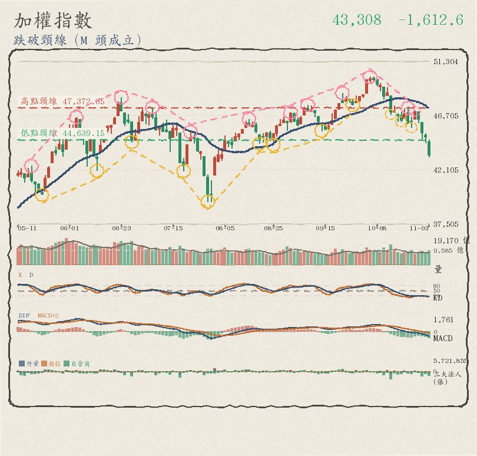
圖說：加權指數日 K（與個股圖相同標記）：黃圈＝轉折低點、粉圈＝轉折高點、虛線小圈＝還沒確認的轉折、藍線＝月線 MA20、水平虛線＝高點／低點頸線。最後一根是資料日當天。
本區塊為公開資料的技術面觀察，不構成投資建議，
不報牌、不預測、不下買賣決策。成交金額為集中市場總成交金額（含 ETF／權證），
與頁首摘要的「上市個股成交金額」口徑不同。標籤是統計，不是評分、也不是推薦。
上市 vs 上櫃（同期快篩）
加權 -3.59% vs 櫃買 -6.42%（同向） → 同向
（兩個市場分開寫，不合併成一個數字；櫃買為 TPEX 公開資料）
櫃買歷史：TPEX 逐日回補 130 根；來源：櫃買中心 www/zh-tw/indexInfo/sectinx（逐日，官方；OpenAPI tpex_index 只回當月）
（TPEX OpenAPI 只回當月，故逐日回補；歷史不足就不算該條均線並標「資料不足」，不用錯數字）
近 20 個交易日大盤狀態回溯（最新在上）（點開看逐日主狀態／量比／量價象限）
用同一支程式回算最近 20 個交易日（主狀態 S1~S8 與量比 20 皆為當日收盤當時的判定，
不是事後調整）；量比 20 未公布的日子寫「—」。
好條件最多的（前 10）
不好條件最多的（前 10）
好條件（7 項）：站上月線、月線向上、底底高、頭頭高、突破頸線、攻擊量（量增＋上漲）、守住今日高檔（距今日高點 1% 內）。
不好條件（7 項）：跌破前低、今日下跌、相對大盤弱、在月線之下、貼近今日低點（1% 內）、跌破昨日低點、月線下彎。
兩邊都是同一組日線資料＋盤中即時價算出來的「符合項目數」，只是把方向相反的條件分開數；
條件數不是評分或推薦，不構成投資建議。
逆勢上漲（加權下跌、個股上漲）（20 上市 14／上櫃 6）
盤中爆量（估量比 ≥ 1.5）（48 上市 32／上櫃 16）
跌破前低（線型轉弱）（59 上市 42／上櫃 17）
今日疲弱（跌幅前 10）（10 上市 7／上櫃 3）
逐檔（70 檔，依盤中成交金額排序）
台積電 2330 上市
2285 -10.0（-0.44%）
區間或轉弱 盤中成交值 268.4 億・全榜第 1 名（上市第 1 名）・相對大盤 +0.20
好條件 0/7：無
不好條件 5/7：跌破前低、今日下跌、在月線之下、貼近今日低點（1% 內）、月線下彎
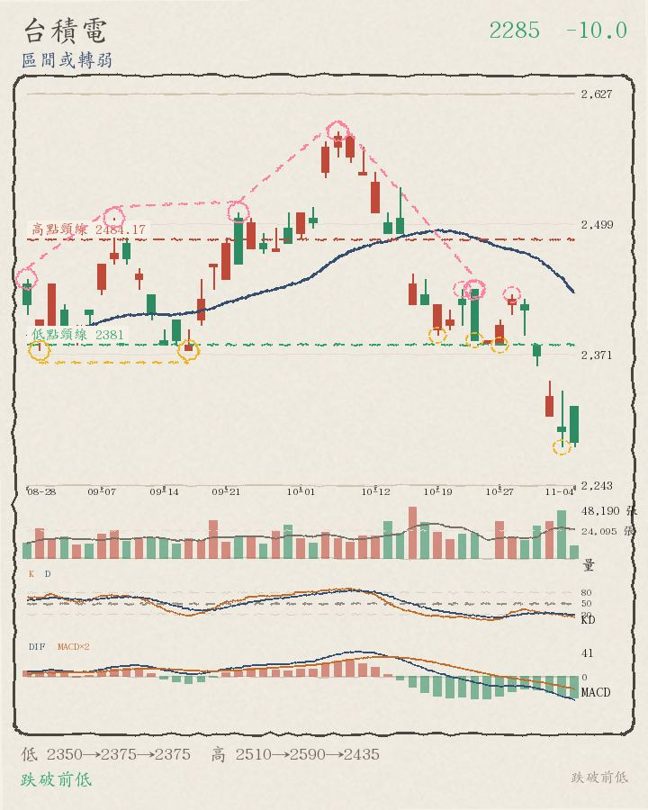
10:31 盤中 2285（-0.44%），比加權指數強 0.20 個百分點、跌破月線 2446.25，離高點頸線 2484.17 還差 8.0%，轉折還沒走出明顯方向。
- 月線位置：現價 2285 在月線 2446.25 之下（-6.6%）；5 日線 2367 也在月線之下（短均在下）；月線向下
- 量能：以已過交易時間推估，今天成交量約是 20 日均量的 1.40 倍（量增），比 20 日均量大不少；下跌卻量增，量價背離
- 關鍵價位：已跌破前一個轉折低點；高點頸線 2484.17 還在現價上方 8.0%；前一交易日高點 2335（低於 2.1%）；今天盤中高點 2320（低於 1.5%）；今天盤中低點 2280（高於 0.2%）
- 轉折結構：低點 2350、2375、2375 與高點 2510、2590、2435 都沒有明顯遞增，屬於區間震盪或轉弱；還沒確認的轉折低點 10-27 2380、11-03 2280；還沒確認的轉折高點 10-22 2435、10-28 2430（圖上虛線小圈）
聯發科 2454 上市
3630 -45.0（-1.22%）
底部墊高、未過前高 盤中成交值 182.95 億・全榜第 2 名（上市第 2 名）・相對大盤 -0.58
好條件 1/7：底底高
不好條件 7/7：跌破前低、今日下跌、相對大盤弱、在月線之下、貼近今日低點（1% 內）、跌破昨日低點、月線下彎
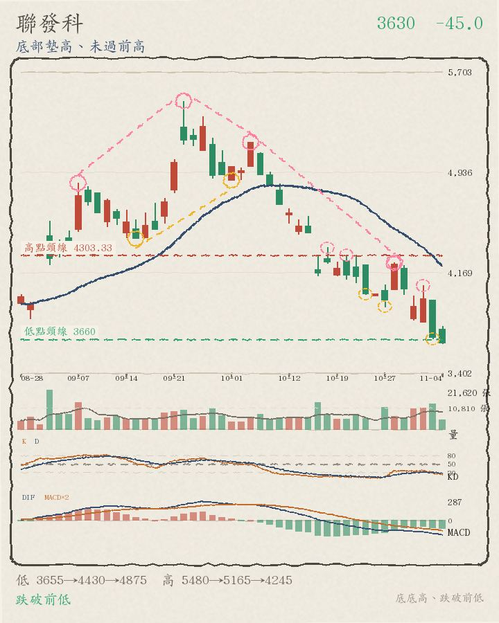
10:31 盤中 3630（-1.22%），比加權指數弱 0.58 個百分點、跌破月線 4298.25，離高點頸線 4303.33 還差 15.6%，底部還在墊高（但高點沒同步創高）。
- 月線位置：現價 3630 在月線 4298.25 之下（-15.6%）；5 日線 3968 也在月線之下（短均在下）；月線向下
- 量能：以已過交易時間推估，今天成交量約是 20 日均量的 1.94 倍（爆量），比 20 日均量大不少；下跌卻量增，量價背離
- 關鍵價位：已跌破前一個轉折低點；高點頸線 4303.33 還在現價上方 15.6%；前一交易日高點 3960（低於 8.3%）；今天盤中高點 3760（低於 3.5%）；今天盤中低點 3625（高於 0.1%）
- 轉折結構：低點 3655、4430、4875 墊高（底底高），但高點 5480、5165、4245 沒有同步創高；還沒確認的轉折低點 10-27 3910、11-03 3665；還沒確認的轉折高點 10-28 4245、11-02 4070（圖上虛線小圈）
南亞 1303 上市
272 +1.0（+0.37%）
區間或轉弱 盤中成交值 167.76 億・全榜第 3 名（上市第 3 名）・相對大盤 +1.01
好條件 2/7：月線向上、攻擊量（量增＋上漲）
不好條件 2/7：跌破前低、在月線之下
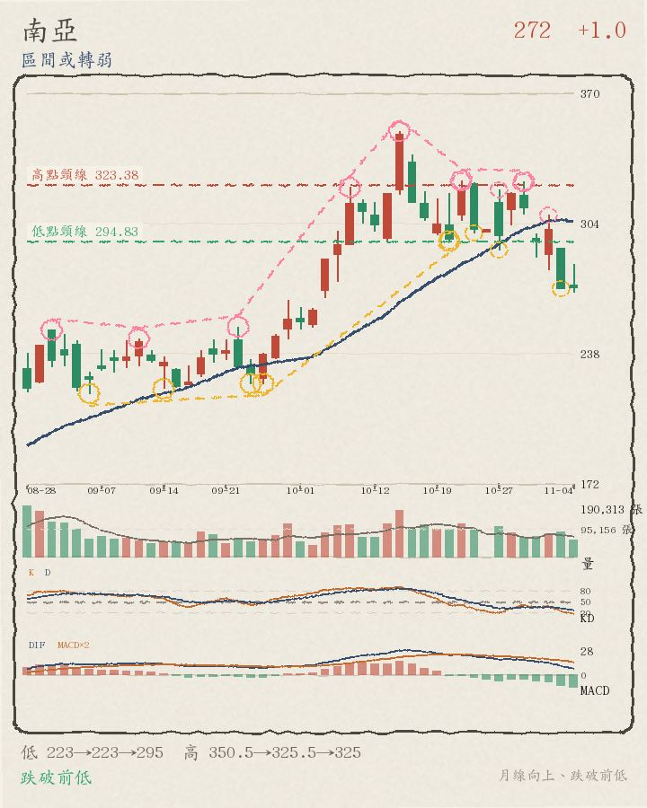
10:31 盤中 272（+0.37%），比加權指數強 1.01 個百分點、跌破月線 305.7，離高點頸線 323.38 還差 15.9%，轉折還沒走出明顯方向。
- 月線位置：現價 272 在月線 305.7 之下（-11.0%）；5 日線 299.8 也在月線之下（短均在下）；月線向上
- 量能：以已過交易時間推估，今天成交量約是 20 日均量的 1.85 倍（爆量），比 20 日均量大不少；上漲又量增，量價配合
- 關鍵價位：已跌破前一個轉折低點；高點頸線 323.38 還在現價上方 15.9%；前一交易日高點 291.5（低於 6.7%）；今天盤中高點 283（低於 3.9%）；今天盤中低點 269（高於 1.1%）
- 轉折結構：低點 223、223、295 與高點 350.5、325.5、325 都沒有明顯遞增，屬於區間震盪或轉弱；還沒確認的轉折低點 10-27 290.5、11-03 271；還沒確認的轉折高點 10-29 325、11-02 308（圖上虛線小圈）
富喬 1815 上櫃
136 +5.0（+3.82%）
底部墊高、未過前高 盤中成交值 142.05 億・全榜第 4 名（上櫃第 1 名）・相對大盤 +4.46
好條件 3/7：月線向上、底底高、攻擊量（量增＋上漲）
不好條件 1/7：在月線之下
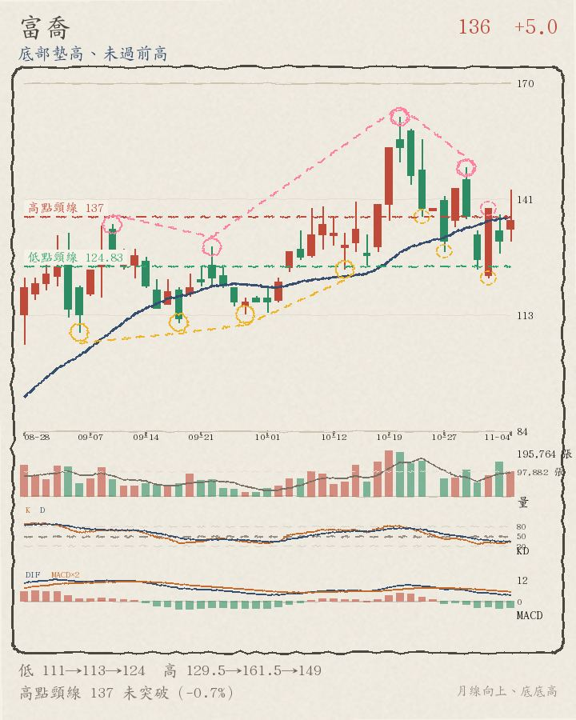
10:31 盤中 136（+3.82%），比加權指數強 4.46 個百分點、跌破月線 136.45，離高點頸線 137 還差 0.7%，底部還在墊高（但高點沒同步創高）。
- 月線位置：現價 136 在月線 136.45 之下（-0.3%）；5 日線 135.5 也在月線之下（短均在下）；月線向上
- 量能：以已過交易時間推估，今天成交量約是 20 日均量的 3.06 倍（爆量），比 20 日均量大不少；上漲又量增，量價配合
- 關鍵價位：高點頸線 137 還沒突破，差 0.7%；前一交易日高點 137.5（低於 1.1%）；今天盤中高點 143.5（低於 5.2%）；今天盤中低點 131（高於 3.8%）
- 轉折結構：低點 111、113、124 墊高（底底高），但高點 129.5、161.5、149 沒有同步創高；還沒確認的轉折低點 10-27 128.5、11-02 122；還沒確認的轉折高點 10-29 149、11-02 139（圖上虛線小圈）
聯茂 6213 上市
609 +9.0（+1.50%）
高點墊高、底部不穩 盤中成交值 117.34 億・全榜第 5 名（上市第 4 名）・相對大盤 +2.14
好條件 3/7：月線向上、頭頭高、攻擊量（量增＋上漲）
不好條件 2/7：跌破前低、在月線之下
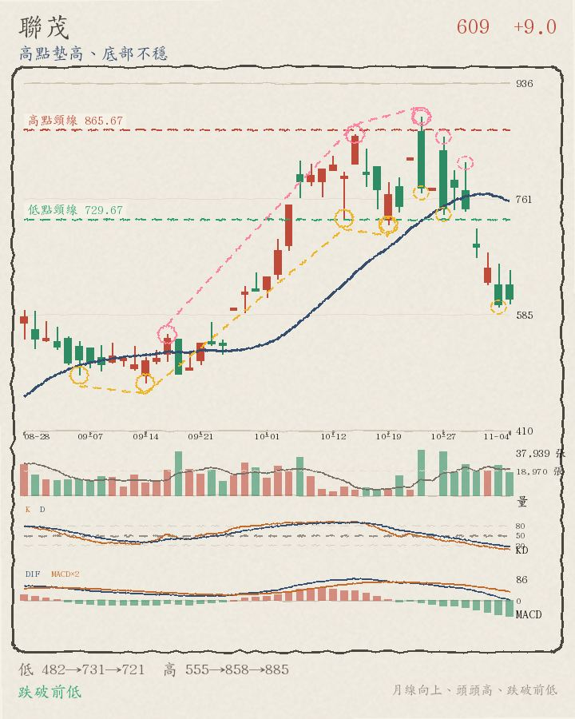
10:31 盤中 609（+1.50%），比加權指數強 2.14 個百分點、跌破月線 764.05，離高點頸線 865.67 還差 29.6%，高點還在墊高（但底部沒同步墊高）。
- 月線位置：現價 609 在月線 764.05 之下（-20.3%）；5 日線 693.2 也在月線之下（短均在下）；月線向上
- 量能：以已過交易時間推估，今天成交量約是 20 日均量的 3.53 倍（爆量），比 20 日均量大不少；上漲又量增，量價配合
- 關鍵價位：已跌破前一個轉折低點；高點頸線 865.67 還在現價上方 29.6%；前一交易日高點 662（低於 8.0%）；今天盤中高點 652（低於 6.6%）；今天盤中低點 601（高於 1.3%）
- 轉折結構：高點 555、858、885 墊高（頭頭高），但低點 482、731、721 沒有同步墊高；還沒確認的轉折低點 10-27 737、11-03 597；還沒確認的轉折高點 10-27 854、10-29 815（圖上虛線小圈）
南亞科 2408 上市
398 -13.0（-3.16%）
區間或轉弱 盤中成交值 113.61 億・全榜第 6 名（上市第 5 名）・相對大盤 -2.52
好條件 0/7：無
不好條件 7/7：跌破前低、今日下跌、相對大盤弱、在月線之下、貼近今日低點（1% 內）、跌破昨日低點、月線下彎

10:31 盤中 398（-3.16%），比加權指數弱 2.52 個百分點、跌破月線 466.15，離高點頸線 452.5 還差 12.0%，轉折還沒走出明顯方向。
- 月線位置：現價 398 在月線 466.15 之下（-14.6%）；5 日線 455.2 也在月線之下（短均在下）；月線向下
- 量能：以已過交易時間推估，今天成交量約是 20 日均量的 1.86 倍（爆量），比 20 日均量大不少；下跌卻量增，量價背離
- 關鍵價位：已跌破前一個轉折低點；高點頸線 452.5 還在現價上方 12.0%；前一交易日高點 442.5（低於 10.1%）；今天盤中高點 413（低於 3.6%）；今天盤中低點 397.5（高於 0.1%）
- 轉折結構：低點 465.5、488、412 與高點 533、537、497.5 都沒有明顯遞增，屬於區間震盪或轉弱；還沒確認的轉折低點 10-22 412、11-03 411；還沒確認的轉折高點 10-21 444、10-29 497.5（圖上虛線小圈）
欣興 3037 上市
873 -29.0（-3.22%）
底部墊高、未過前高 盤中成交值 112.83 億・全榜第 7 名（上市第 6 名）・相對大盤 -2.58
好條件 1/7：底底高
不好條件 7/7：跌破前低、今日下跌、相對大盤弱、在月線之下、貼近今日低點（1% 內）、跌破昨日低點、月線下彎
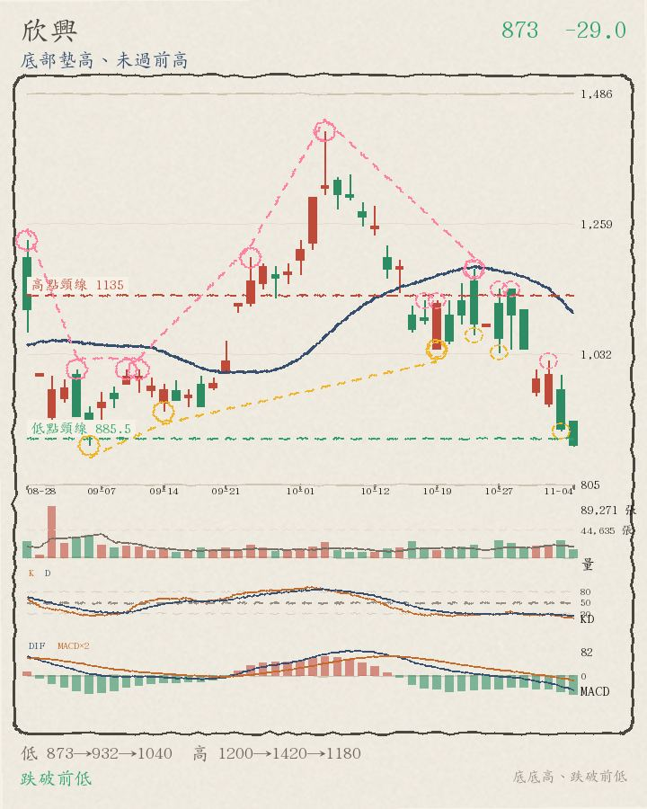
10:31 盤中 873（-3.22%），比加權指數弱 2.58 個百分點、跌破月線 1126.4，離高點頸線 1135 還差 23.1%，底部還在墊高（但高點沒同步創高）。
- 月線位置：現價 873 在月線 1126.4 之下（-22.5%）；5 日線 1005.6 也在月線之下（短均在下）；月線向下
- 量能：以已過交易時間推估，今天成交量約是 20 日均量的 2.22 倍（爆量），比 20 日均量大不少；下跌卻量增，量價背離
- 關鍵價位：已跌破前一個轉折低點；高點頸線 1135 還在現價上方 23.1%；前一交易日高點 996（低於 12.3%）；今天盤中高點 916（低於 4.7%）；今天盤中低點 871（高於 0.2%）
- 轉折結構：低點 873、932、1040 墊高（底底高），但高點 1200、1420、1180 沒有同步創高；還沒確認的轉折低點 10-27 1035、11-03 898；還沒確認的轉折高點 10-28 1145、11-02 1020（圖上虛線小圈）
台光電 2383 上市
4595 +200.0（+4.55%）
底部墊高、未過前高 盤中成交值 109.45 億・全榜第 8 名（上市第 7 名）・相對大盤 +5.19
好條件 2/7：底底高、攻擊量（量增＋上漲）
不好條件 3/7：跌破前低、在月線之下、月線下彎
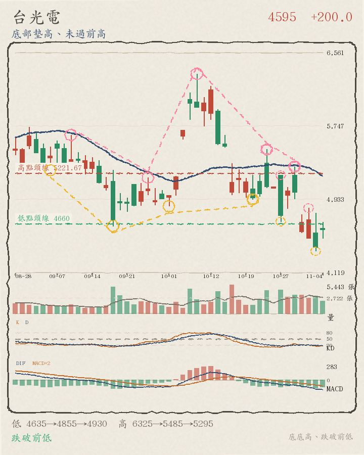
10:31 盤中 4595（+4.55%），比加權指數強 5.19 個百分點、跌破月線 5245.25，離高點頸線 5221.67 還差 12.0%，底部還在墊高（但高點沒同步創高）。
- 月線位置：現價 4595 在月線 5245.25 之下（-12.4%）；5 日線 4762 也在月線之下（短均在下）；月線向下
- 量能：以已過交易時間推估，今天成交量約是 20 日均量的 2.39 倍（爆量），比 20 日均量大不少；上漲又量增，量價配合
- 關鍵價位：已跌破前一個轉折低點；高點頸線 5221.67 還在現價上方 12.0%；前一交易日高點 4780（低於 3.9%）；今天盤中高點 4680（低於 1.8%）；今天盤中低點 4500（高於 2.1%）
- 轉折結構：低點 4635、4855、4930 墊高（底底高），但高點 6325、5485、5295 沒有同步創高；還沒確認的轉折低點 10-27 4685、11-03 4355；還沒確認的轉折高點 10-29 5295、11-02 4835（圖上虛線小圈）
台達電 2308 上市
1220 -50.0（-3.94%）
高點墊高、底部不穩 盤中成交值 107.04 億・全榜第 9 名（上市第 8 名）・相對大盤 -3.30
好條件 1/7：頭頭高
不好條件 7/7：跌破前低、今日下跌、相對大盤弱、在月線之下、貼近今日低點（1% 內）、跌破昨日低點、月線下彎
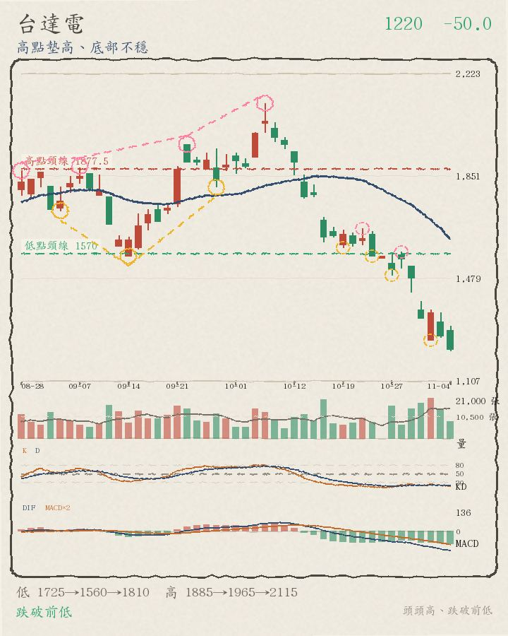
10:31 盤中 1220（-3.94%），比加權指數弱 3.30 個百分點、跌破月線 1661.25，離高點頸線 1877.5 還差 35.0%，高點還在墊高（但底部沒同步墊高）。
- 月線位置：現價 1220 在月線 1661.25 之下（-26.6%）；5 日線 1398 也在月線之下（短均在下）；月線向下
- 量能：以已過交易時間推估，今天成交量約是 20 日均量的 2.25 倍（爆量），比 20 日均量大不少；下跌卻量增，量價背離
- 關鍵價位：已跌破前一個轉折低點；高點頸線 1877.5 還在現價上方 35.0%；前一交易日高點 1355（低於 10.0%）；今天盤中高點 1305（低於 6.5%）；今天盤中低點 1215（高於 0.4%）
- 轉折結構：高點 1885、1965、2115 墊高（頭頭高），但低點 1725、1560、1810 沒有同步墊高；還沒確認的轉折低點 10-27 1490、11-02 1255；還沒確認的轉折高點 10-21 1660、10-28 1575（圖上虛線小圈）
台玻 1802 上市
66.7 -1.0（-1.48%）
區間或轉弱 盤中成交值 99.07 億・全榜第 10 名（上市第 9 名）・相對大盤 -0.84
好條件 2/7：站上月線、月線向上
不好條件 2/7：今日下跌、相對大盤弱
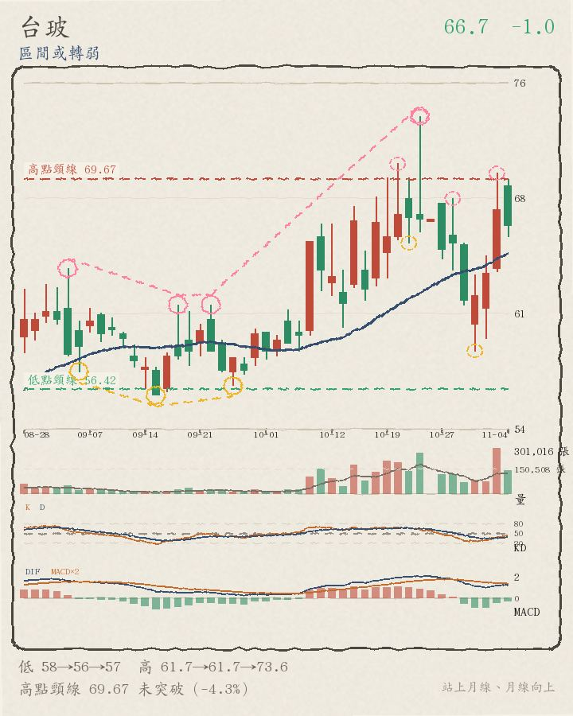
10:31 盤中 66.7（-1.48%），比加權指數弱 0.84 個百分點、站上月線 64.595，離高點頸線 69.67 還差 4.3%，轉折還沒走出明顯方向。
- 月線位置：現價 66.7 在月線 64.595 之上（+3.3%）；5 日線 64.26 也在月線之下（短均在下）；月線向上
- 量能：以已過交易時間推估，今天成交量約是 20 日均量的 3.81 倍（爆量），比 20 日均量大不少；下跌卻量增，量價背離
- 關鍵價位：高點頸線 69.67 還沒突破，差 4.3%；前一交易日高點 70（低於 4.7%）；今天盤中高點 69.6（低於 4.2%）；今天盤中低點 66（高於 1.1%）
- 轉折結構：低點 57.5、56、56.6 與高點 61.7、61.7、73.6 都沒有明顯遞增，屬於區間震盪或轉弱；還沒確認的轉折低點 10-21 65.6、10-30 58.8；還沒確認的轉折高點 10-28 68.4、11-03 70（圖上虛線小圈）
創意 3443 上市
7115 +320.0（+4.71%）
區間或轉弱 盤中成交值 98.12 億・全榜第 11 名（上市第 10 名）・相對大盤 +5.35
好條件 2/7：攻擊量（量增＋上漲）、守住今日高檔（距今日高點 1% 內）
不好條件 3/7：跌破前低、在月線之下、月線下彎
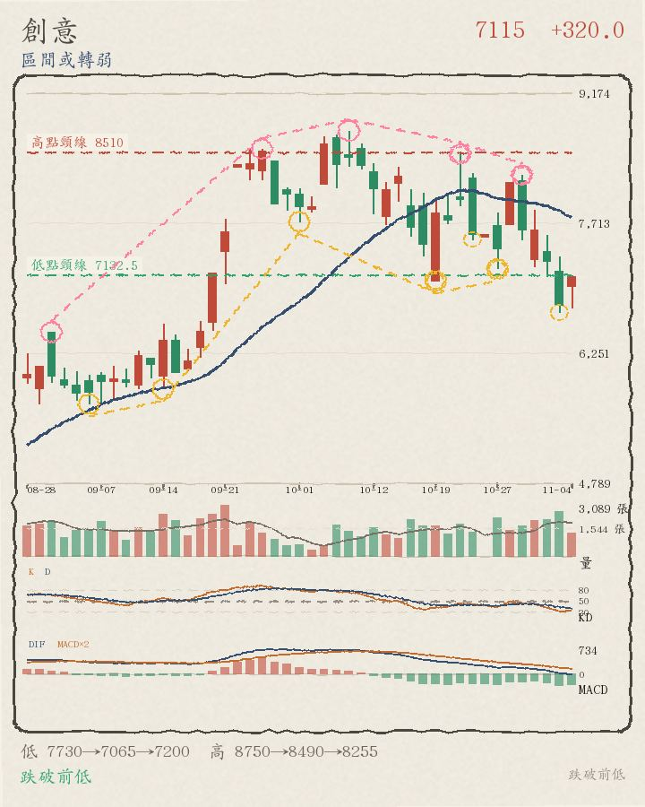
10:31 盤中 7115（+4.71%），比加權指數強 5.35 個百分點、跌破月線 7854.25，離高點頸線 8510 還差 16.4%，轉折還沒走出明顯方向。
- 月線位置：現價 7115 在月線 7854.25 之下（-9.4%）；5 日線 7505 也在月線之下（短均在下）；月線向下
- 量能：以已過交易時間推估，今天成交量約是 20 日均量的 2.58 倍（爆量），比 20 日均量大不少；上漲又量增，量價配合
- 關鍵價位：已跌破前一個轉折低點；高點頸線 8510 還在現價上方 16.4%；前一交易日高點 7335（低於 3.0%）；今天盤中高點 7125（低於 0.1%）；今天盤中低點 6755（高於 5.3%）
- 轉折結構：低點 7730、7065、7200 與高點 8750、8490、8255 都沒有明顯遞增，屬於區間震盪或轉弱；還沒確認的轉折低點 10-27 7200、11-03 6710；還沒確認的轉折高點 10-21 8490、10-29 8255（圖上虛線小圈）
環球晶 6488 上櫃
619 -66.0（-9.64%）
區間或轉弱 盤中成交值 85.38 億・全榜第 12 名（上櫃第 2 名）・相對大盤 -9.00
好條件 0/7：無
不好條件 7/7：跌破前低、今日下跌、相對大盤弱、在月線之下、貼近今日低點（1% 內）、跌破昨日低點、月線下彎
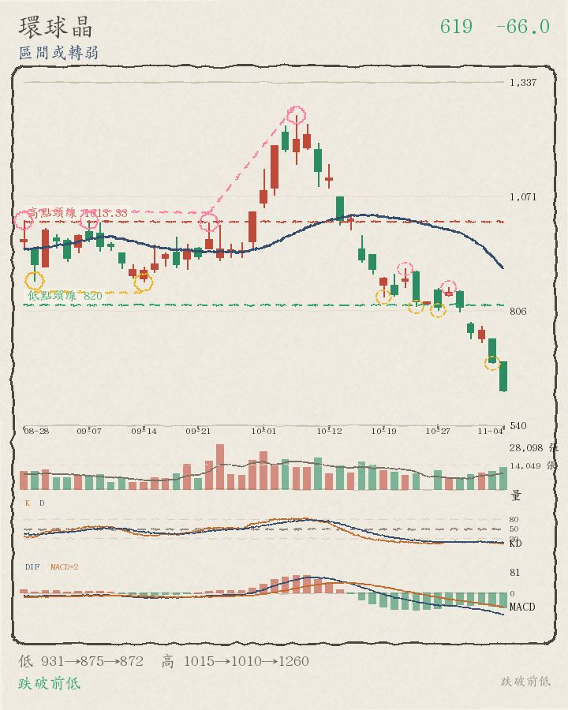
10:31 盤中 619（-9.64%），比加權指數弱 9.00 個百分點、跌破月線 932.05，離高點頸線 1013.33 還差 38.9%，轉折還沒走出明顯方向。
- 月線位置：現價 619 在月線 932.05 之下（-33.6%）；5 日線 772.8 也在月線之下（短均在下）；月線向下
- 量能：以已過交易時間推估，今天成交量約是 20 日均量的 3.36 倍（爆量），比 20 日均量大不少；下跌卻量增，量價背離
- 關鍵價位：已跌破前一個轉折低點；高點頸線 1013.33 還在現價上方 38.9%；前一交易日高點 740（低於 16.4%）；今天盤中高點 688（低於 10.0%）；今天盤中低點 617（高於 0.3%）
- 轉折結構：低點 931、875、872 與高點 1015、1010、1260 都沒有明顯遞增，屬於區間震盪或轉弱；還沒確認的轉折低點 10-27 807、11-03 684；還沒確認的轉折高點 10-21 903、10-28 860（圖上虛線小圈）
台燿 6274 上櫃
1095 +5.0（+0.46%）
區間或轉弱 盤中成交值 81.72 億・全榜第 13 名（上櫃第 3 名）・相對大盤 +1.10
好條件 1/7：攻擊量（量增＋上漲）
不好條件 4/7：跌破前低、在月線之下、貼近今日低點（1% 內）、月線下彎

10:31 盤中 1095（+0.46%），比加權指數強 1.10 個百分點、跌破月線 1524.5，離高點頸線 1447.5 還差 24.4%，轉折還沒走出明顯方向。
- 月線位置：現價 1095 在月線 1524.5 之下（-28.2%）；5 日線 1266 也在月線之下（短均在下）；月線向下
- 量能：以已過交易時間推估，今天成交量約是 20 日均量的 1.91 倍（爆量），比 20 日均量大不少；上漲又量增，量價配合
- 關鍵價位：已跌破前一個轉折低點；高點頸線 1447.5 還在現價上方 24.4%；前一交易日高點 1205（低於 9.1%）；今天盤中高點 1145（低於 4.4%）；今天盤中低點 1085（高於 0.9%）
- 轉折結構：低點 1395、1295、1275 與高點 1460、1835、1450 都沒有明顯遞增，屬於區間震盪或轉弱；還沒確認的轉折低點 10-27 1280、11-03 1090；還沒確認的轉折高點 10-27 1450、10-29 1450（圖上虛線小圈）
穩懋 3105 上櫃
486 -44.0（-8.30%）
區間或轉弱 盤中成交值 80.02 億・全榜第 14 名（上櫃第 4 名）・相對大盤 -7.66
好條件 1/7：月線向上
不好條件 5/7：今日下跌、相對大盤弱、在月線之下、貼近今日低點（1% 內）、跌破昨日低點
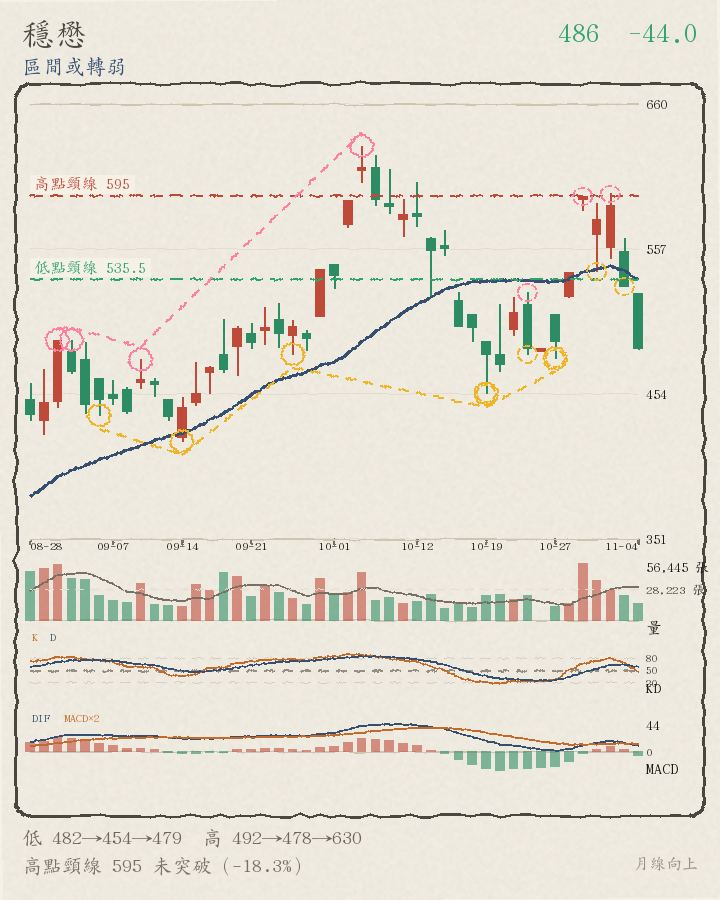
10:31 盤中 486（-8.30%），比加權指數弱 7.66 個百分點、跌破月線 541.7，離高點頸線 595 還差 18.3%，轉折還沒走出明顯方向。
- 月線位置：現價 486 在月線 541.7 之下（-10.3%）；5 日線 566 也在月線之上（短均在上）；月線向上
- 量能：以已過交易時間推估，今天成交量約是 20 日均量的 1.99 倍（爆量），比 20 日均量大不少；下跌卻量增，量價背離
- 關鍵價位：高點頸線 595 還沒突破，差 18.3%；前一交易日高點 564（低於 13.8%）；今天盤中高點 525（低於 7.4%）；今天盤中低點 485（高於 0.2%）
- 轉折結構：低點 482、454、479 與高點 492、478、630 都沒有明顯遞增，屬於區間震盪或轉弱；還沒確認的轉折低點 10-30 541、11-03 530；還沒確認的轉折高點 10-29 594、11-02 596（圖上虛線小圈）
國巨* 2327 上市
448.5 -4.5（-0.99%）
區間或轉弱 盤中成交值 72.93 億・全榜第 15 名（上市第 11 名）・相對大盤 -0.35
好條件 0/7：無
不好條件 7/7：跌破前低、今日下跌、相對大盤弱、在月線之下、貼近今日低點（1% 內）、跌破昨日低點、月線下彎
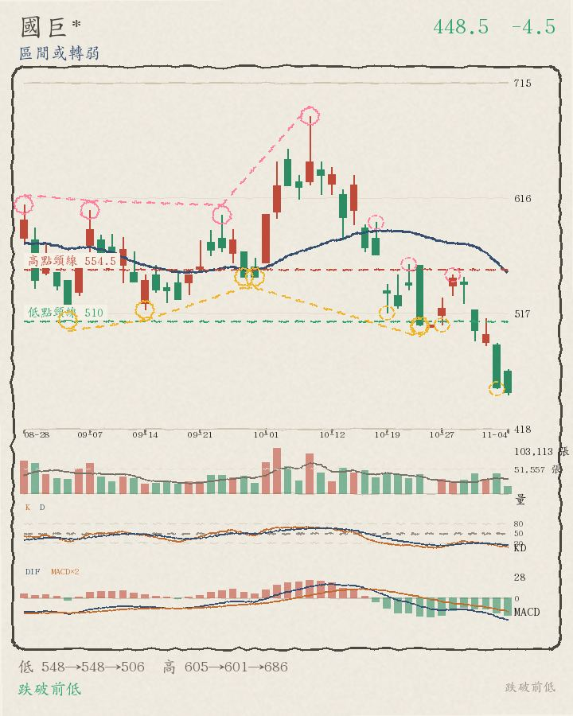
10:31 盤中 448.5（-0.99%），比加權指數弱 0.35 個百分點、跌破月線 560.625，離高點頸線 554.5 還差 19.1%，轉折還沒走出明顯方向。
- 月線位置：現價 448.5 在月線 560.625 之下（-20.0%）；5 日線 508.7 也在月線之下（短均在下）；月線向下
- 量能：以已過交易時間推估，今天成交量約是 20 日均量的 1.05 倍（量平），比 20 日均量大一些
- 關鍵價位：已跌破前一個轉折低點；高點頸線 554.5 還在現價上方 19.1%；前一交易日高點 491（低於 8.7%）；今天盤中高點 468.5（低於 4.3%）；今天盤中低點 446.5（高於 0.4%）
- 轉折結構：低點 548、548、506 與高點 605、601、686 都沒有明顯遞增，屬於區間震盪或轉弱；還沒確認的轉折低點 10-27 507、11-03 452；還沒確認的轉折高點 10-21 559、10-28 550（圖上虛線小圈）
健策 3653 上市
6275 +240.0（+3.98%）
區間或轉弱 盤中成交值 72.85 億・全榜第 16 名（上市第 12 名）・相對大盤 +4.62
好條件 1/7：攻擊量（量增＋上漲）
不好條件 2/7：在月線之下、月線下彎
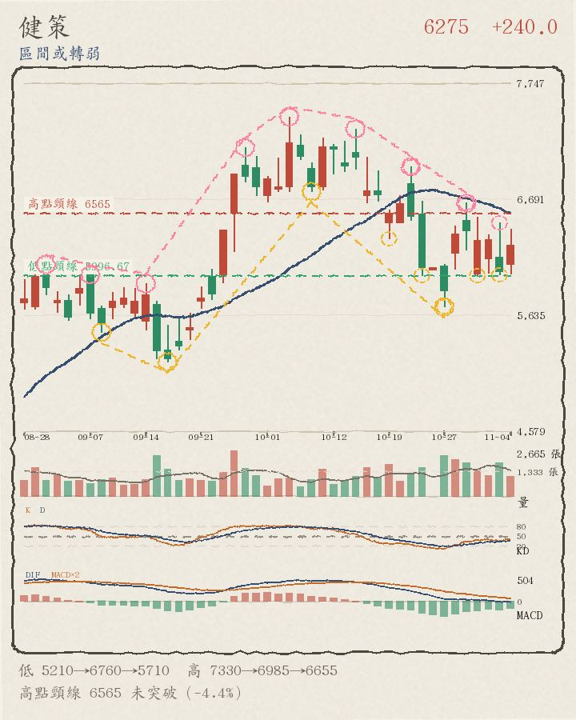
10:31 盤中 6275（+3.98%），比加權指數強 4.62 個百分點、跌破月線 6608.25，離高點頸線 6565 還差 4.4%，轉折還沒走出明顯方向。
- 月線位置：現價 6275 在月線 6608.25 之下（-5.0%）；5 日線 6290 也在月線之下（短均在下）；月線向下
- 量能：以已過交易時間推估，今天成交量約是 20 日均量的 2.58 倍（爆量），比 20 日均量大不少；上漲又量增，量價配合
- 關鍵價位：高點頸線 6565 還沒突破，差 4.4%；前一交易日高點 6475（低於 3.1%）；今天盤中高點 6420（低於 2.3%）；今天盤中低點 6010（高於 4.4%）
- 轉折結構：低點 5210、6760、5710 與高點 7330、6985、6655 都沒有明顯遞增，屬於區間震盪或轉弱；還沒確認的轉折低點 10-30 5995、11-03 6000；還沒確認的轉折高點 10-29 6655、11-03 6475（圖上虛線小圈）
日月光投控 3711 上市
621 +5.0（+0.81%）
區間或轉弱 盤中成交值 67.48 億・全榜第 17 名（上市第 13 名）・相對大盤 +1.45
好條件 1/7：攻擊量（量增＋上漲）
不好條件 4/7：跌破前低、在月線之下、貼近今日低點（1% 內）、月線下彎
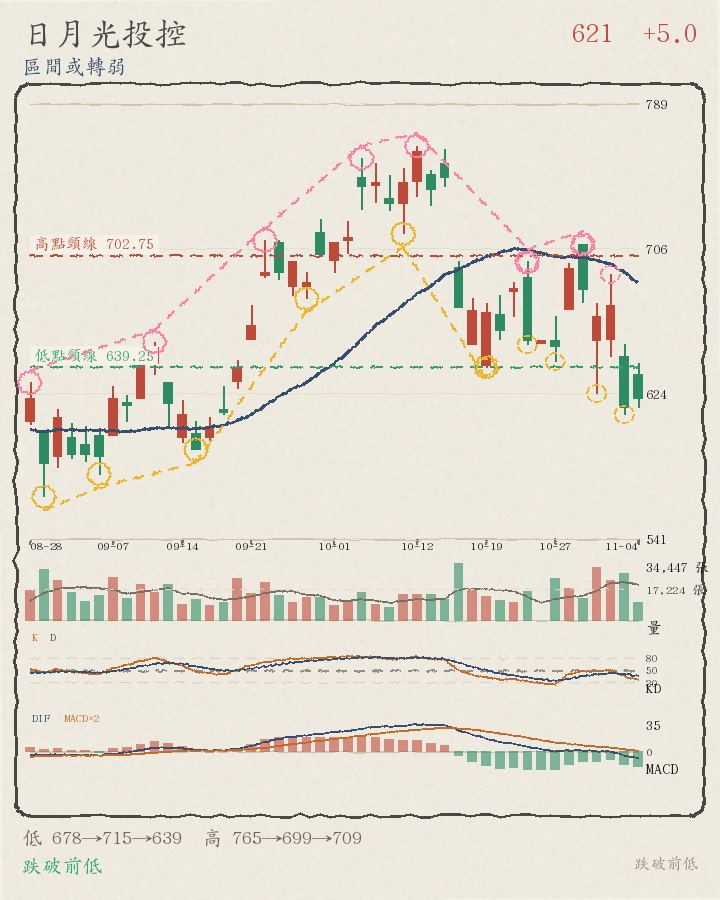
10:31 盤中 621（+0.81%），比加權指數強 1.45 個百分點、跌破月線 693.2，離高點頸線 702.75 還差 11.6%，轉折還沒走出明顯方向。
- 月線位置：現價 621 在月線 693.2 之下（-10.4%）；5 日線 667.2 也在月線之下（短均在下）；月線向下
- 量能：以已過交易時間推估，今天成交量約是 20 日均量的 1.90 倍（爆量），比 20 日均量大不少；上漲又量增，量價配合
- 關鍵價位：已跌破前一個轉折低點；高點頸線 702.75 還在現價上方 11.6%；前一交易日高點 652（低於 4.8%）；今天盤中高點 641（低於 3.1%）；今天盤中低點 616（高於 0.8%）
- 轉折結構：低點 678、715、639 與高點 765、699、709 都沒有明顯遞增，屬於區間震盪或轉弱；還沒確認的轉折低點 10-30 624、11-03 612；還沒確認的轉折高點 10-29 709、11-02 692（圖上虛線小圈）
臻鼎-KY 4958 上市
430 -13.0（-2.93%）
底部墊高、未過前高 盤中成交值 65.26 億・全榜第 18 名（上市第 14 名）・相對大盤 -2.29
好條件 1/7：底底高
不好條件 6/7：跌破前低、今日下跌、相對大盤弱、在月線之下、跌破昨日低點、月線下彎
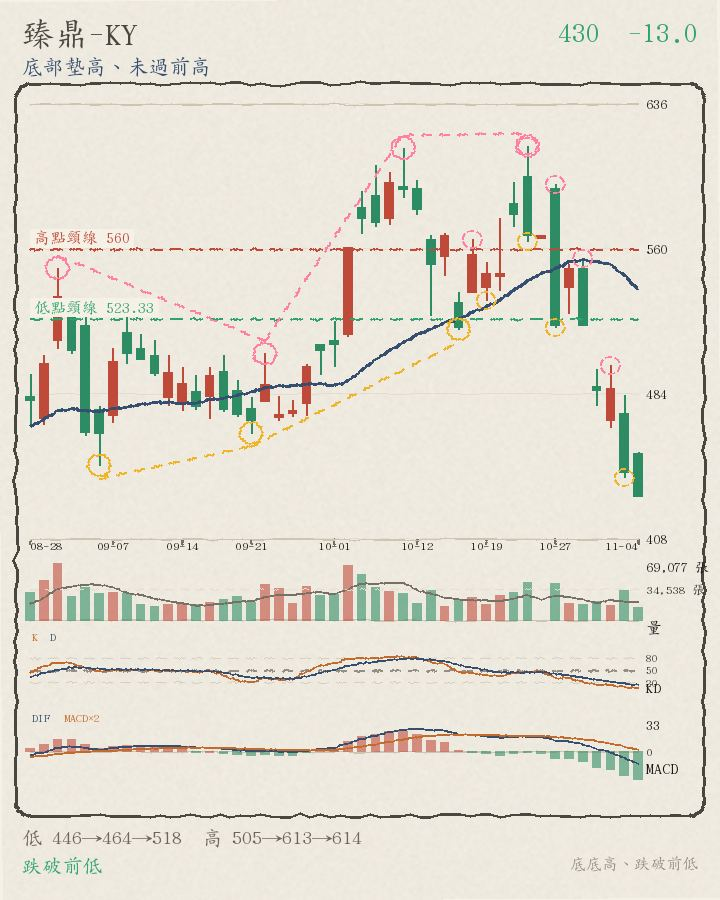
10:31 盤中 430（-2.93%），比加權指數弱 2.29 個百分點、跌破月線 546.25，離高點頸線 560 還差 23.2%，底部還在墊高（但高點沒同步創高）。
- 月線位置：現價 430 在月線 546.25 之下（-21.3%）；5 日線 497.2 也在月線之下（短均在下）；月線向下
- 量能：以已過交易時間推估，今天成交量約是 20 日均量的 1.42 倍（量增），比 20 日均量大不少；下跌卻量增，量價背離
- 關鍵價位：已跌破前一個轉折低點；高點頸線 560 還在現價上方 23.2%；前一交易日高點 483（低於 11.0%）；今天盤中高點 453.5（低於 5.2%）；今天盤中低點 430（高於 0.0%）
- 轉折結構：低點 446.5、463.5、518 墊高（底底高），但高點 505、613、614 沒有同步創高；還沒確認的轉折低點 10-27 519、11-03 440；還沒確認的轉折高點 10-29 555、11-02 499（圖上虛線小圈）
川湖 2059 上市
8725 -515.0（-5.57%）
區間或轉弱 盤中成交值 63.87 億・全榜第 19 名（上市第 15 名）・相對大盤 -4.93
好條件 0/7：無
不好條件 6/7：跌破前低、今日下跌、相對大盤弱、在月線之下、跌破昨日低點、月線下彎
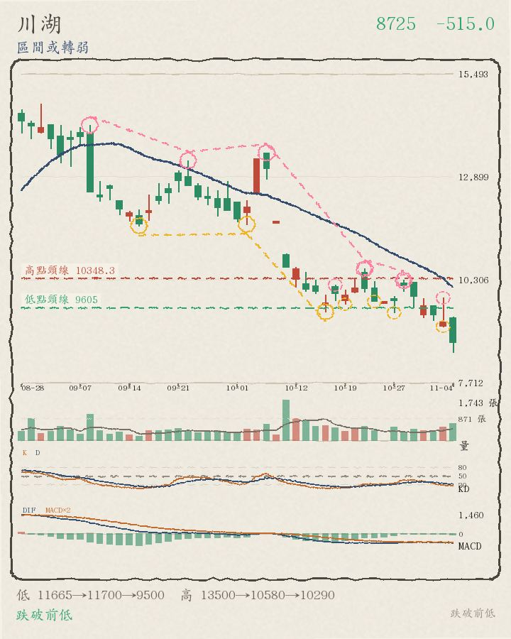
10:31 盤中 8725（-5.57%），比加權指數弱 4.93 個百分點、跌破月線 10347，離高點頸線 10348.3 還差 15.7%，轉折還沒走出明顯方向。
- 月線位置：現價 8725 在月線 10347 之下（-15.7%）；5 日線 9668 也在月線之下（短均在下）；月線向下
- 量能：以已過交易時間推估，今天成交量約是 20 日均量的 3.70 倍（爆量），比 20 日均量大不少；下跌卻量增，量價背離
- 關鍵價位：已跌破前一個轉折低點；高點頸線 10348.3 還在現價上方 15.7%；前一交易日高點 9850（低於 11.4%）；今天盤中高點 9360（低於 6.8%）；今天盤中低點 8465（高於 3.1%）
- 轉折結構：低點 11665、11700、9500 與高點 13500、10580、10290 都沒有明顯遞增，屬於區間震盪或轉弱；還沒確認的轉折低點 10-27 9475、11-03 9125；還沒確認的轉折高點 10-28 10290、11-03 9850（圖上虛線小圈）
景碩 3189 上市
803 -16.0（-1.95%）
底部墊高、未過前高 盤中成交值 63.78 億・全榜第 20 名（上市第 16 名）・相對大盤 -1.31
好條件 1/7：底底高
不好條件 7/7：跌破前低、今日下跌、相對大盤弱、在月線之下、貼近今日低點（1% 內）、跌破昨日低點、月線下彎
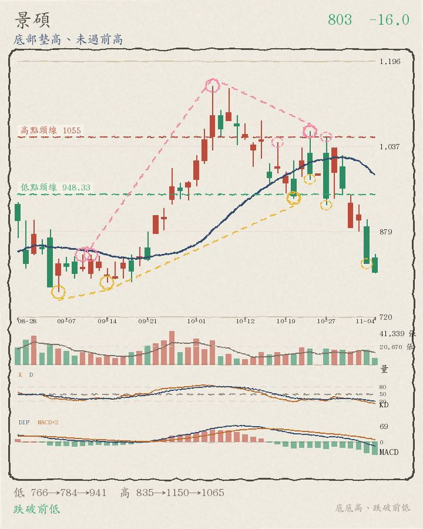
10:31 盤中 803（-1.95%），比加權指數弱 1.31 個百分點、跌破月線 998.7，離高點頸線 1055 還差 23.9%，底部還在墊高（但高點沒同步創高）。
- 月線位置：現價 803 在月線 998.7 之下（-19.6%）；5 日線 931 也在月線之下（短均在下）；月線向下
- 量能：以已過交易時間推估，今天成交量約是 20 日均量的 1.56 倍（爆量），比 20 日均量大不少；下跌卻量增，量價背離
- 關鍵價位：已跌破前一個轉折低點；高點頸線 1055 還在現價上方 23.9%；前一交易日高點 901（低於 10.9%）；今天盤中高點 836（低於 3.9%）；今天盤中低點 801（高於 0.2%）
- 轉折結構：低點 766、784、941 墊高（底底高），但高點 835、1150、1065 沒有同步創高；還沒確認的轉折低點 10-27 928、11-03 819；還沒確認的轉折高點 10-22 1065、10-27 1055（圖上虛線小圈）
南電 8046 上市
1045 -25.0（-2.34%）
底部墊高、未過前高 盤中成交值 63.26 億・全榜第 21 名（上市第 17 名）・相對大盤 -1.70
好條件 1/7：底底高
不好條件 7/7：跌破前低、今日下跌、相對大盤弱、在月線之下、貼近今日低點（1% 內）、跌破昨日低點、月線下彎
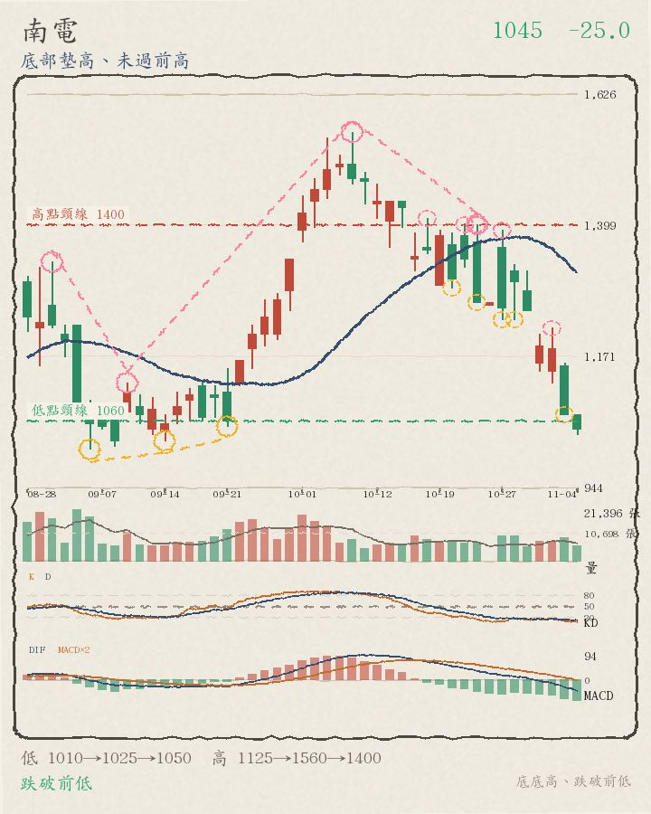
10:31 盤中 1045（-2.34%），比加權指數弱 1.70 個百分點、跌破月線 1338.5，離高點頸線 1400 還差 25.4%，底部還在墊高（但高點沒同步創高）。
- 月線位置：現價 1045 在月線 1338.5 之下（-21.9%）；5 日線 1199 也在月線之下（短均在下）；月線向下
- 量能：以已過交易時間推估，今天成交量約是 20 日均量的 2.06 倍（爆量），比 20 日均量大不少；下跌卻量增，量價背離
- 關鍵價位：已跌破前一個轉折低點；高點頸線 1400 還在現價上方 25.4%；前一交易日高點 1160（低於 9.9%）；今天盤中高點 1070（低於 2.3%）；今天盤中低點 1035（高於 1.0%）
- 轉折結構：低點 1010、1025、1050 墊高（底底高），但高點 1125、1560、1400 沒有同步創高；還沒確認的轉折低點 10-28 1235、11-03 1070；還沒確認的轉折高點 10-27 1390、11-02 1220（圖上虛線小圈）
華邦電 2344 上市
139.5 -6.5（-4.45%）
區間或轉弱 盤中成交值 63.1 億・全榜第 22 名（上市第 18 名）・相對大盤 -3.81
好條件 0/7：無
不好條件 6/7：跌破前低、今日下跌、相對大盤弱、在月線之下、跌破昨日低點、月線下彎

10:31 盤中 139.5（-4.45%），比加權指數弱 3.81 個百分點、跌破月線 164.325，離高點頸線 181 還差 22.9%，轉折還沒走出明顯方向。
- 月線位置：現價 139.5 在月線 164.325 之下（-15.1%）；5 日線 163 也在月線之下（短均在下）；月線向下
- 量能：以已過交易時間推估，今天成交量約是 20 日均量的 2.10 倍（爆量），比 20 日均量大不少；下跌卻量增，量價背離
- 關鍵價位：已跌破前一個轉折低點；高點頸線 181 還在現價上方 22.9%；前一交易日高點 158（低於 11.7%）；今天盤中高點 148（低於 5.7%）；今天盤中低點 139.5（高於 0.0%）
- 轉折結構：低點 174、151、151 與高點 180.5、184、178.5 都沒有明顯遞增，屬於區間震盪或轉弱；還沒確認的轉折低點 10-22 154、11-03 146；還沒確認的轉折高點 10-21 161.5、10-29 178.5（圖上虛線小圈）
聯電 2303 上市
103 +0.0（+0.00%）
底部墊高、未過前高 盤中成交值 60.85 億・全榜第 23 名（上市第 19 名）・相對大盤 +0.64
好條件 1/7：底底高
不好條件 4/7：跌破前低、在月線之下、貼近今日低點（1% 內）、月線下彎
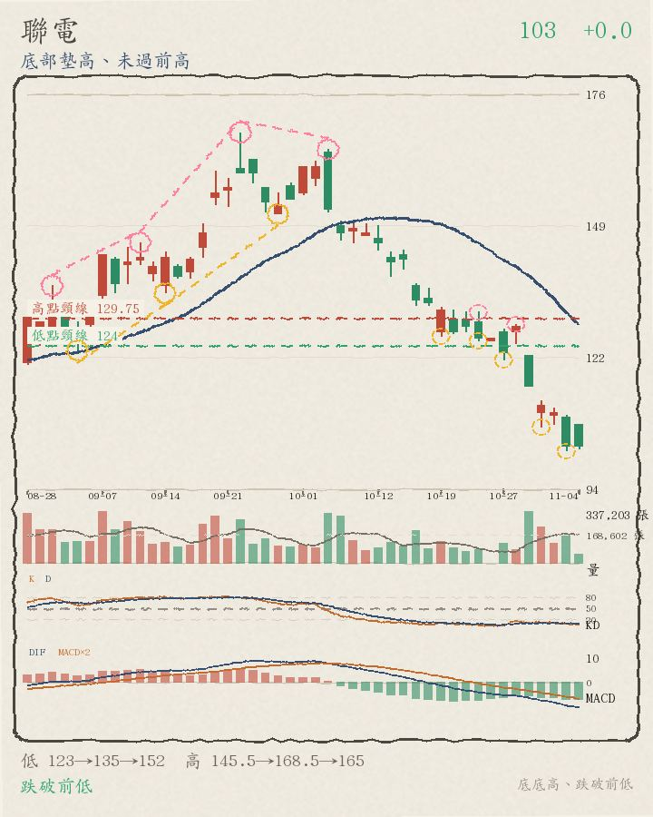
10:31 盤中 103（+0.00%），比加權指數強 0.64 個百分點、跌破月線 130.975，離高點頸線 129.75 還差 20.6%，底部還在墊高（但高點沒同步創高）。
- 月線位置：現價 103 在月線 130.975 之下（-21.4%）；5 日線 113.6 也在月線之下（短均在下）；月線向下
- 量能：以已過交易時間推估，今天成交量約是 20 日均量的 1.15 倍（量增），比 20 日均量大不少
- 關鍵價位：已跌破前一個轉折低點；高點頸線 129.75 還在現價上方 20.6%；前一交易日高點 109.5（低於 5.9%）；今天盤中高點 107.5（低於 4.2%）；今天盤中低點 102.5（高於 0.5%）
- 轉折結構：低點 123、135、151.5 墊高（底底高），但高點 145.5、168.5、165 沒有同步創高；還沒確認的轉折低點 10-30 107、11-03 102；還沒確認的轉折高點 10-22 131、10-28 128.5（圖上虛線小圈）
騰輝電子-KY 6672 上市
537 +35.0（+6.97%）
上升趨勢（底底高＋頭頭高） 盤中成交值 53.76 億・全榜第 24 名（上市第 20 名）・相對大盤 +7.61
好條件 4/7：月線向上、底底高、頭頭高、攻擊量（量增＋上漲）
不好條件 1/7：在月線之下
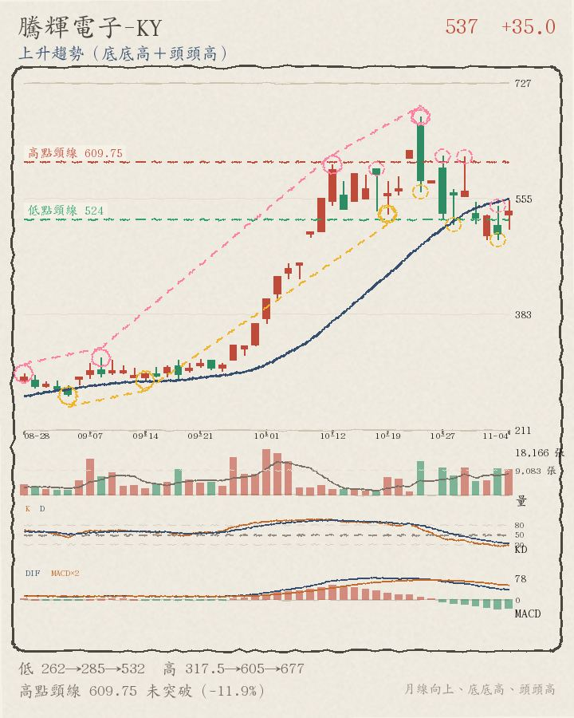
10:31 盤中 537（+6.97%），比加權指數強 7.61 個百分點、跌破月線 549.975，離高點頸線 609.75 還差 11.9%，轉折結構仍是底底高＋頭頭高。
- 月線位置：現價 537 在月線 549.975 之下（-2.4%）；5 日線 537 也在月線之下（短均在下）；月線向上
- 量能：以已過交易時間推估，今天成交量約是 20 日均量的 4.92 倍（爆量），比 20 日均量大不少；上漲又量增，量價配合
- 關鍵價位：高點頸線 609.75 還沒突破，差 11.9%；前一交易日高點 544（低於 1.3%）；今天盤中高點 552（低於 2.7%）；今天盤中低點 509（高於 5.5%）
- 轉折結構：低點 261.5、285、532 一路墊高、高點 317.5、605、677 也一路墊高，是底底高＋頭頭高；還沒確認的轉折低點 10-28 516、11-03 493.5；還沒確認的轉折高點 10-29 617、11-03 544（圖上虛線小圈）
奇鋐 3017 上市
2855 -80.0（-2.73%）
區間或轉弱 盤中成交值 49.39 億・全榜第 25 名（上市第 21 名）・相對大盤 -2.09
好條件 0/7：無
不好條件 7/7：跌破前低、今日下跌、相對大盤弱、在月線之下、貼近今日低點（1% 內）、跌破昨日低點、月線下彎
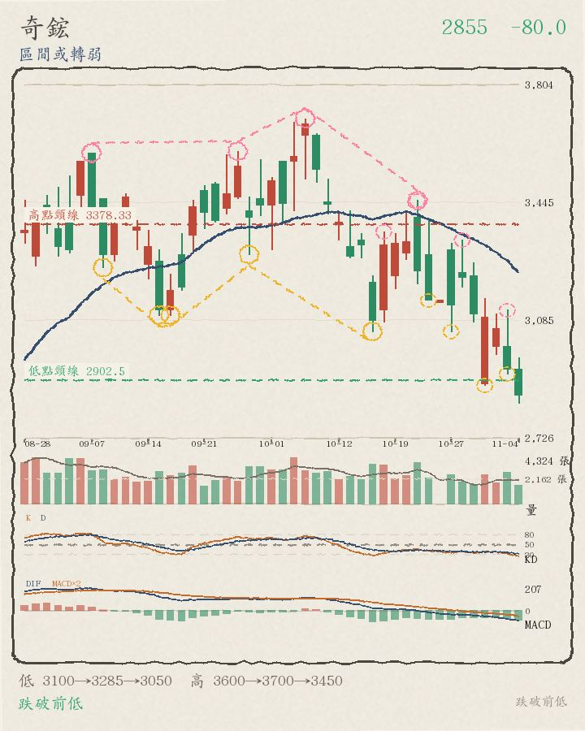
10:31 盤中 2855（-2.73%），比加權指數弱 2.09 個百分點、跌破月線 3267.25，離高點頸線 3378.33 還差 15.5%，轉折還沒走出明顯方向。
- 月線位置：現價 2855 在月線 3267.25 之下（-12.6%）；5 日線 3082 也在月線之下（短均在下）；月線向下
- 量能：以已過交易時間推估，今天成交量約是 20 日均量的 1.84 倍（爆量），比 20 日均量大不少；下跌卻量增，量價背離
- 關鍵價位：已跌破前一個轉折低點；高點頸線 3378.33 還在現價上方 15.5%；前一交易日高點 3115（低於 8.3%）；今天盤中高點 2970（低於 3.9%）；今天盤中低點 2830（高於 0.9%）
- 轉折結構：低點 3100、3285、3050 與高點 3600、3700、3450 都沒有明顯遞增，屬於區間震盪或轉弱；還沒確認的轉折低點 10-30 2885、11-03 2920；還沒確認的轉折高點 10-28 3330、11-03 3115（圖上虛線小圈）
金像電 2368 上市
954 -16.0（-1.65%）
區間或轉弱 盤中成交值 45.99 億・全榜第 26 名（上市第 22 名）・相對大盤 -1.01
好條件 0/7：無
不好條件 7/7：跌破前低、今日下跌、相對大盤弱、在月線之下、貼近今日低點（1% 內）、跌破昨日低點、月線下彎

10:31 盤中 954（-1.65%），比加權指數弱 1.01 個百分點、跌破月線 1169.75，離高點頸線 1082.5 還差 11.9%，轉折還沒走出明顯方向。
- 月線位置：現價 954 在月線 1169.75 之下（-18.4%）；5 日線 1070 也在月線之下（短均在下）；月線向下
- 量能：以已過交易時間推估，今天成交量約是 20 日均量的 1.35 倍（量增），比 20 日均量大不少；下跌卻量增，量價背離
- 關鍵價位：已跌破前一個轉折低點；高點頸線 1082.5 還在現價上方 11.9%；前一交易日高點 1050（低於 9.1%）；今天盤中高點 1015（低於 6.0%）；今天盤中低點 951（高於 0.3%）
- 轉折結構：低點 1030、950、1120 與高點 1310、1295、1190 都沒有明顯遞增，屬於區間震盪或轉弱；還沒確認的轉折低點 10-27 1055、11-03 960；還沒確認的轉折高點 10-29 1190、11-02 1080（圖上虛線小圈）
華新科 2492 上市
307 -13.5（-4.21%）
區間或轉弱 盤中成交值 44.3 億・全榜第 27 名（上市第 23 名）・相對大盤 -3.57
好條件 1/7：月線向上
不好條件 6/7：跌破前低、今日下跌、相對大盤弱、在月線之下、貼近今日低點（1% 內）、跌破昨日低點
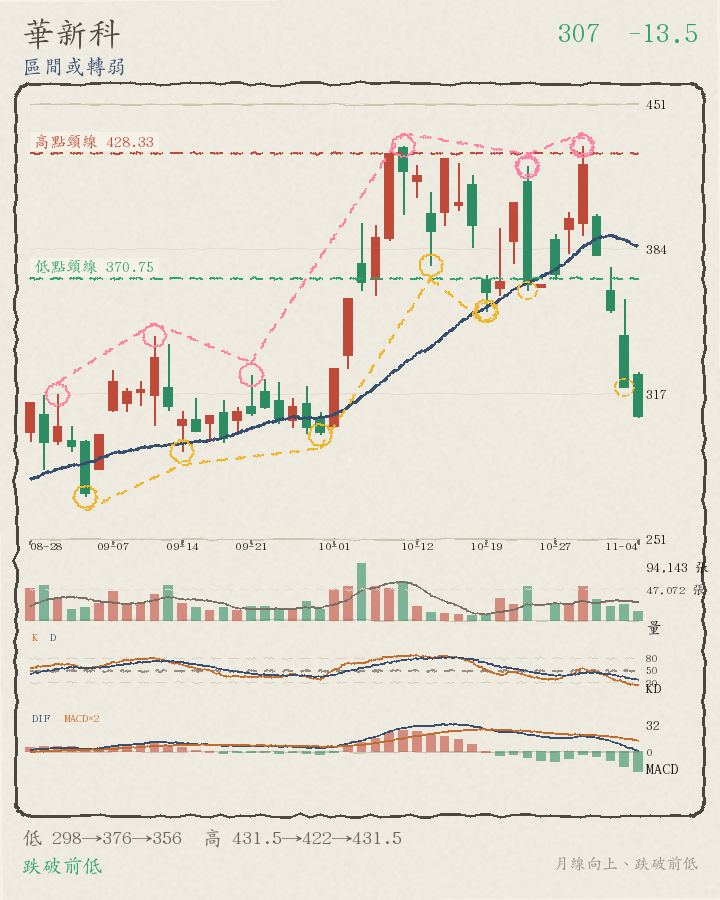
10:31 盤中 307（-4.21%），比加權指數弱 3.57 個百分點、跌破月線 388.4，離高點頸線 428.33 還差 28.3%，轉折還沒走出明顯方向。
- 月線位置：現價 307 在月線 388.4 之下（-21.0%）；5 日線 375.7 也在月線之下（短均在下）；月線向上
- 量能：以已過交易時間推估，今天成交量約是 20 日均量的 1.21 倍（量增），比 20 日均量大不少；下跌卻量增，量價背離
- 關鍵價位：已跌破前一個轉折低點；高點頸線 428.33 還在現價上方 28.3%；前一交易日高點 361（低於 15.0%）；今天盤中高點 327.5（低於 6.3%）；今天盤中低點 306.5（高於 0.2%）
- 轉折結構：低點 298.5、376.5、355.5 與高點 431.5、422、431.5 都沒有明顯遞增，屬於區間震盪或轉弱；還沒確認的轉折低點 10-22 365、11-03 320.5；還沒確認的轉折高點 10-22 422、10-29 431.5（圖上虛線小圈）
高力 8996 上市
1365 +5.0（+0.37%）
區間或轉弱 盤中成交值 43.16 億・全榜第 28 名（上市第 24 名）・相對大盤 +1.01
好條件 1/7：攻擊量（量增＋上漲）
不好條件 3/7：跌破前低、在月線之下、月線下彎
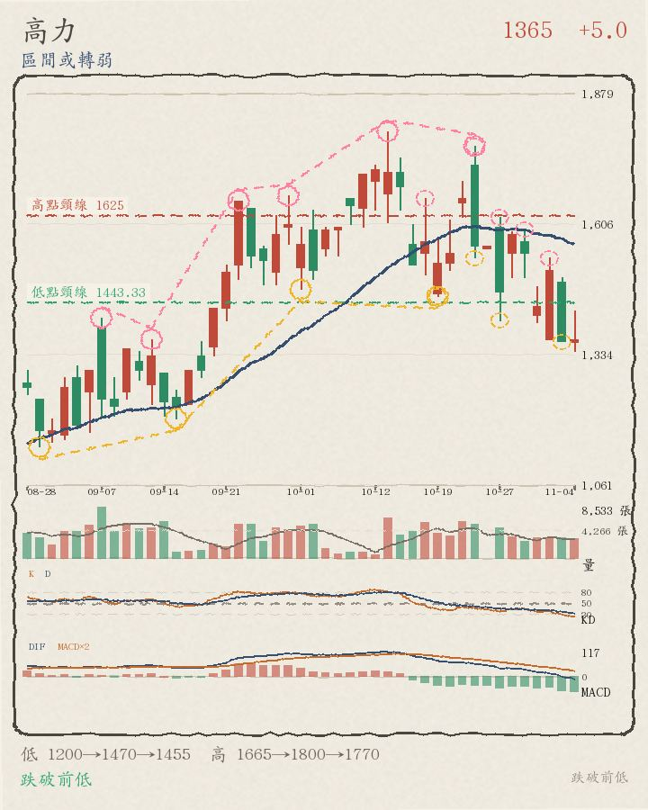
10:31 盤中 1365（+0.37%），比加權指數強 1.01 個百分點、跌破月線 1575.5，離高點頸線 1625 還差 16.0%，轉折還沒走出明顯方向。
- 月線位置：現價 1365 在月線 1575.5 之下（-13.4%）；5 日線 1487 也在月線之下（短均在下）；月線向下
- 量能：以已過交易時間推估，今天成交量約是 20 日均量的 2.59 倍（爆量），比 20 日均量大不少；上漲又量增，量價配合
- 關鍵價位：已跌破前一個轉折低點；高點頸線 1625 還在現價上方 16.0%；前一交易日高點 1495（低於 8.7%）；今天盤中高點 1425（低於 4.2%）；今天盤中低點 1340（高於 1.9%）
- 轉折結構：低點 1200、1470、1455 與高點 1665、1800、1770 都沒有明顯遞增，屬於區間震盪或轉弱；還沒確認的轉折低點 10-27 1405、11-03 1360；還沒確認的轉折高點 10-29 1595、11-02 1535（圖上虛線小圈）
致茂 2360 上市
1455 -90.0（-5.83%）
區間或轉弱 盤中成交值 42.62 億・全榜第 29 名（上市第 25 名）・相對大盤 -5.19
好條件 0/7：無
不好條件 7/7：跌破前低、今日下跌、相對大盤弱、在月線之下、貼近今日低點（1% 內）、跌破昨日低點、月線下彎

10:31 盤中 1455（-5.83%），比加權指數弱 5.19 個百分點、跌破月線 2058.5，離高點頸線 2090 還差 30.4%，轉折還沒走出明顯方向。
- 月線位置：現價 1455 在月線 2058.5 之下（-29.3%）；5 日線 1799 也在月線之下（短均在下）；月線向下
- 量能：以已過交易時間推估，今天成交量約是 20 日均量的 3.12 倍（爆量），比 20 日均量大不少；下跌卻量增，量價背離
- 關鍵價位：已跌破前一個轉折低點；高點頸線 2090 還在現價上方 30.4%；前一交易日高點 1655（低於 12.1%）；今天盤中高點 1530（低於 4.9%）；今天盤中低點 1450（高於 0.3%）
- 轉折結構：低點 2070、2025、1945 與高點 2560、2110、2070 都沒有明顯遞增，屬於區間震盪或轉弱；還沒確認的轉折低點 10-27 1905、11-03 1545；還沒確認的轉折高點 10-22 2110、10-29 2070（圖上虛線小圈）
大立光 3008 上市
5010 +65.0（+1.31%）
區間或轉弱 盤中成交值 42.48 億・全榜第 30 名（上市第 26 名）・相對大盤 +1.95
好條件 0/7：無
不好條件 3/7：跌破前低、在月線之下、月線下彎

10:31 盤中 5010（+1.31%），比加權指數強 1.95 個百分點、跌破月線 6316.5，離高點頸線 6410 還差 21.8%，轉折還沒走出明顯方向。
- 月線位置：現價 5010 在月線 6316.5 之下（-20.7%）；5 日線 5603 也在月線之下（短均在下）；月線向下
- 量能：以已過交易時間推估，今天成交量約是 20 日均量的 0.92 倍（量平），比 20 日均量少一些
- 關鍵價位：已跌破前一個轉折低點；高點頸線 6410 還在現價上方 21.8%；前一交易日高點 5350（低於 6.4%）；今天盤中高點 5100（低於 1.8%）；今天盤中低點 4900（高於 2.2%）
- 轉折結構：低點 5740、6355、5970 與高點 6750、7460、6370 都沒有明顯遞增，屬於區間震盪或轉弱；還沒確認的轉折低點 10-27 5960、11-03 4945；還沒確認的轉折高點 10-21 6450、10-28 6370（圖上虛線小圈）
聯亞 3081 上櫃
2085 -90.0（-4.14%）
區間或轉弱 盤中成交值 42.1 億・全榜第 31 名（上櫃第 5 名）・相對大盤 -3.50
好條件 0/7：無
不好條件 6/7：跌破前低、今日下跌、相對大盤弱、在月線之下、跌破昨日低點、月線下彎
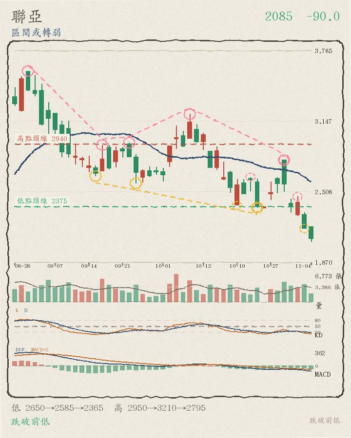
10:31 盤中 2085（-4.14%），比加權指數弱 3.50 個百分點、跌破月線 2644.25，離高點頸線 2940 還差 29.1%，轉折還沒走出明顯方向。
- 月線位置：現價 2085 在月線 2644.25 之下（-21.1%）；5 日線 2423 也在月線之下（短均在下）；月線向下
- 量能：以已過交易時間推估，今天成交量約是 20 日均量的 1.74 倍（爆量），比 20 日均量大不少；下跌卻量增，量價背離
- 關鍵價位：已跌破前一個轉折低點；高點頸線 2940 還在現價上方 29.1%；前一交易日高點 2320（低於 10.1%）；今天盤中高點 2195（低於 5.0%）；今天盤中低點 2055（高於 1.5%）
- 轉折結構：低點 2650、2585、2365 與高點 2950、3210、2795 都沒有明顯遞增，屬於區間震盪或轉弱；還沒確認的轉折低點 10-22 2365、11-03 2175；還沒確認的轉折高點 10-29 2795、11-02 2465（圖上虛線小圈）
鴻海 2317 上市
241.5 -4.0（-1.63%）
區間或轉弱 盤中成交值 38.09 億・全榜第 32 名（上市第 27 名）・相對大盤 -0.99
好條件 0/7：無
不好條件 6/7：今日下跌、相對大盤弱、在月線之下、貼近今日低點（1% 內）、跌破昨日低點、月線下彎
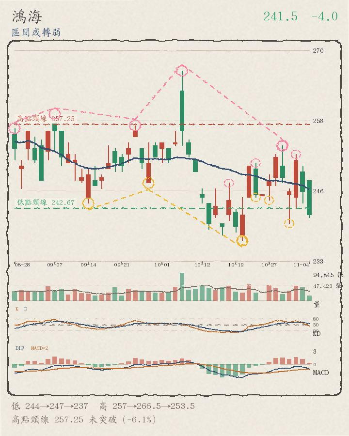
10:31 盤中 241.5（-1.63%），比加權指數弱 0.99 個百分點、跌破月線 246.6，離高點頸線 257.25 還差 6.1%，轉折還沒走出明顯方向。
- 月線位置：現價 241.5 在月線 246.6 之下（-2.1%）；5 日線 248.3 也在月線之上（短均在上）；月線向下
- 量能：以已過交易時間推估，今天成交量約是 20 日均量的 1.12 倍（量增），比 20 日均量大一些；下跌卻量增，量價背離
- 關鍵價位：高點頸線 257.25 還沒突破，差 6.1%；前一交易日高點 250（低於 3.4%）；今天盤中高點 247.5（低於 2.4%）；今天盤中低點 241（高於 0.2%）
- 轉折結構：低點 243.5、247、237 與高點 257、266.5、253.5 都沒有明顯遞增，屬於區間震盪或轉弱；還沒確認的轉折低點 10-27 244、10-30 240；還沒確認的轉折高點 10-29 253.5、11-02 252（圖上虛線小圈）
量增
↑ 回上方清單
玉晶光 3406 上市
897 -39.0（-4.17%）
區間或轉弱 盤中成交值 35.66 億・全榜第 33 名（上市第 28 名）・相對大盤 -3.53
好條件 1/7：月線向上
不好條件 6/7：跌破前低、今日下跌、相對大盤弱、在月線之下、貼近今日低點（1% 內）、跌破昨日低點
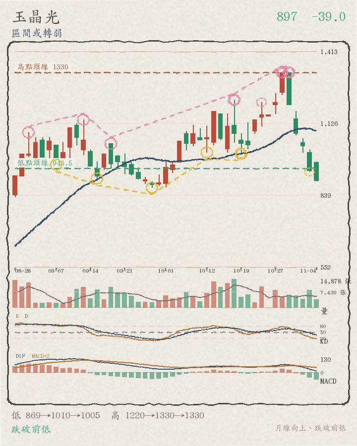
10:31 盤中 897（-4.17%），比加權指數弱 3.53 個百分點、跌破月線 1104.8，離高點頸線 1330 還差 32.6%，轉折還沒走出明顯方向。
- 月線位置：現價 897 在月線 1104.8 之下（-18.8%）；5 日線 1117.2 也在月線之上（短均在上）；月線向上
- 量能：以已過交易時間推估，今天成交量約是 20 日均量的 1.57 倍（爆量），比 20 日均量大不少；下跌卻量增，量價背離
- 關鍵價位：已跌破前一個轉折低點；高點頸線 1330 還在現價上方 32.6%；前一交易日高點 1020（低於 12.1%）；今天盤中高點 972（低於 7.7%）；今天盤中低點 895（高於 0.2%）
- 轉折結構：低點 869、1010、1005 與高點 1220、1330、1330 都沒有明顯遞增，屬於區間震盪或轉弱；還沒確認的轉折低點 10-19 1005、11-03 932；還沒確認的轉折高點 10-28 1330、10-29 1330（圖上虛線小圈）
貿聯-KY 3665 上市
1550 -25.0（-1.59%）
區間或轉弱 盤中成交值 34.47 億・全榜第 34 名（上市第 29 名）・相對大盤 -0.95
好條件 0/7：無
不好條件 7/7：跌破前低、今日下跌、相對大盤弱、在月線之下、貼近今日低點（1% 內）、跌破昨日低點、月線下彎
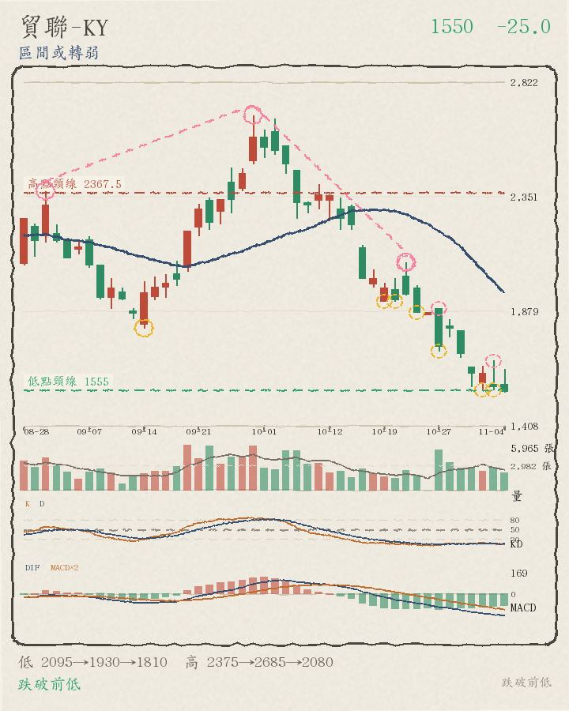
10:31 盤中 1550（-1.59%），比加權指數弱 0.95 個百分點、跌破月線 2002，離高點頸線 2367.5 還差 34.5%，轉折還沒走出明顯方向。
- 月線位置：現價 1550 在月線 2002 之下（-22.6%）；5 日線 1668 也在月線之下（短均在下）；月線向下
- 量能：以已過交易時間推估，今天成交量約是 20 日均量的 2.23 倍（爆量），比 20 日均量大不少；下跌卻量增，量價背離
- 關鍵價位：已跌破前一個轉折低點；高點頸線 2367.5 還在現價上方 34.5%；前一交易日高點 1675（低於 7.5%）；今天盤中高點 1640（低於 5.5%）；今天盤中低點 1545（高於 0.3%）
- 轉折結構：低點 2095、1930、1810 與高點 2375、2685、2080 都沒有明顯遞增，屬於區間震盪或轉弱；還沒確認的轉折低點 11-02 1555、11-03 1555；還沒確認的轉折高點 10-27 1890、11-03 1675（圖上虛線小圈）
禾伸堂 3026 上市
568 -6.0（-1.05%）
區間或轉弱 盤中成交值 32.94 億・全榜第 35 名（上市第 30 名）・相對大盤 -0.41
好條件 0/7：無
不好條件 7/7：跌破前低、今日下跌、相對大盤弱、在月線之下、貼近今日低點（1% 內）、跌破昨日低點、月線下彎
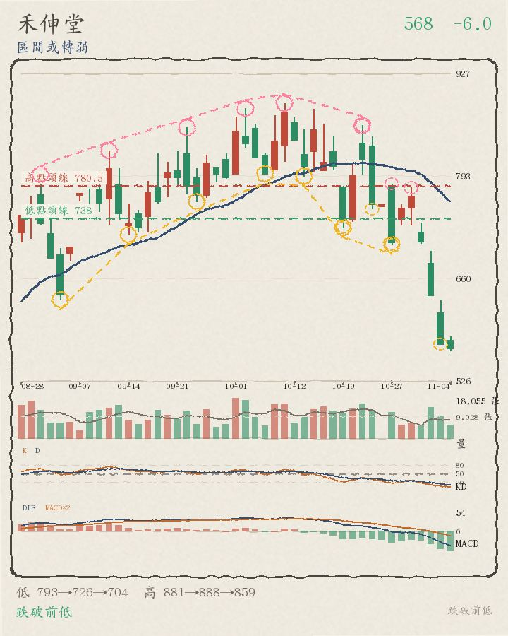
10:31 盤中 568（-1.05%），比加權指數弱 0.41 個百分點、跌破月線 772.2，離高點頸線 780.5 還差 27.2%，轉折還沒走出明顯方向。
- 月線位置：現價 568 在月線 772.2 之下（-26.4%）；5 日線 687.2 也在月線之下（短均在下）；月線向下
- 量能：以已過交易時間推估，今天成交量約是 20 日均量的 1.53 倍（爆量），比 20 日均量大不少；下跌卻量增，量價背離
- 關鍵價位：已跌破前一個轉折低點；高點頸線 780.5 還在現價上方 27.2%；前一交易日高點 631（低於 10.0%）；今天盤中高點 584（低於 2.7%）；今天盤中低點 565（高於 0.5%）
- 轉折結構：低點 793、726、704 與高點 881、888、859 都沒有明顯遞增，屬於區間震盪或轉弱；還沒確認的轉折低點 10-27 704、11-03 574；還沒確認的轉折高點 10-27 783、10-29 778（圖上虛線小圈）
力積電 6770 上市
59.3 -0.9（-1.50%）
區間或轉弱 盤中成交值 30.24 億・全榜第 36 名（上市第 31 名）・相對大盤 -0.86
好條件 0/7：無
不好條件 7/7：跌破前低、今日下跌、相對大盤弱、在月線之下、貼近今日低點（1% 內）、跌破昨日低點、月線下彎

10:31 盤中 59.3（-1.50%），比加權指數弱 0.86 個百分點、跌破月線 68.45，離高點頸線 74.33 還差 20.2%，轉折還沒走出明顯方向。
- 月線位置：現價 59.3 在月線 68.45 之下（-13.4%）；5 日線 66.58 也在月線之下（短均在下）；月線向下
- 量能：以已過交易時間推估，今天成交量約是 20 日均量的 1.38 倍（量增），比 20 日均量大不少；下跌卻量增，量價背離
- 關鍵價位：已跌破前一個轉折低點；高點頸線 74.33 還在現價上方 20.2%；前一交易日高點 64.6（低於 8.2%）；今天盤中高點 62（低於 4.4%）；今天盤中低點 59.2（高於 0.2%）
- 轉折結構：低點 66.7、70.5、63 與高點 74.7、78.1、73 都沒有明顯遞增，屬於區間震盪或轉弱；還沒確認的轉折低點 10-23 66.4、11-03 60.1；還沒確認的轉折高點 10-22 69.9、10-29 73（圖上虛線小圈）
雙鴻 3324 上櫃
1305 -15.0（-1.14%）
區間或轉弱 盤中成交值 28.87 億・全榜第 37 名（上櫃第 6 名）・相對大盤 -0.50
好條件 0/7：無
不好條件 5/7：跌破前低、今日下跌、相對大盤弱、在月線之下、月線下彎
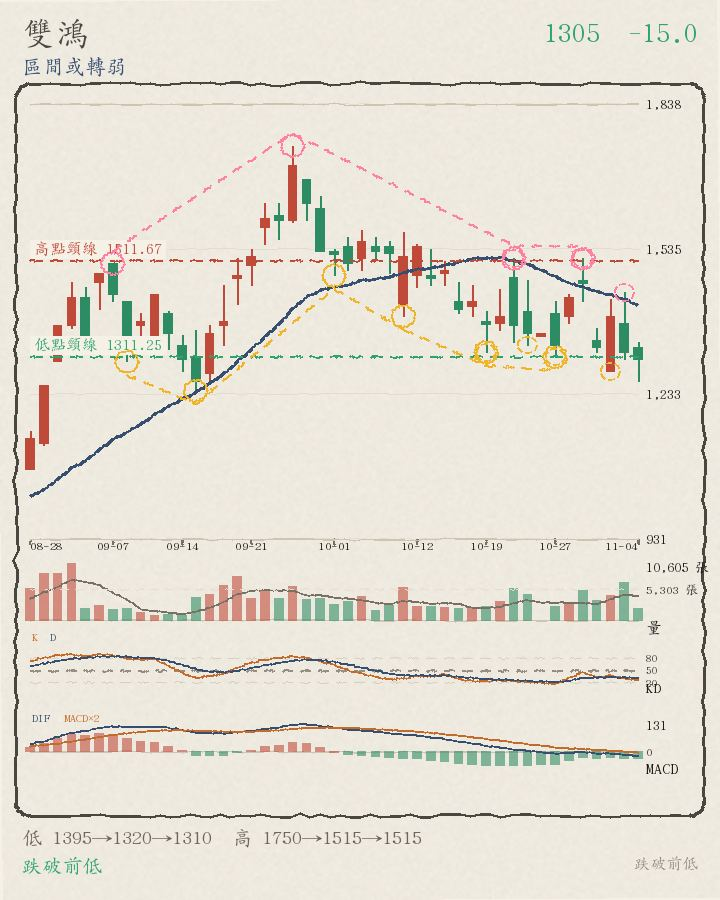
10:31 盤中 1305（-1.14%），比加權指數弱 0.50 個百分點、跌破月線 1430.75，離高點頸線 1511.67 還差 13.7%，轉折還沒走出明顯方向。
- 月線位置：現價 1305 在月線 1430.75 之下（-8.8%）；5 日線 1389 也在月線之下（短均在下）；月線向下
- 量能：以已過交易時間推估，今天成交量約是 20 日均量的 1.88 倍（爆量），比 20 日均量大不少；下跌卻量增，量價背離
- 關鍵價位：已跌破前一個轉折低點；高點頸線 1511.67 還在現價上方 13.7%；前一交易日高點 1445（低於 9.7%）；今天盤中高點 1340（低於 2.6%）；今天盤中低點 1260（高於 3.6%）
- 轉折結構：低點 1395、1320、1310 與高點 1750、1515、1515 都沒有明顯遞增，屬於區間震盪或轉弱；還沒確認的轉折低點 10-27 1310、11-02 1280；還沒確認的轉折高點 10-29 1515、11-03 1445（圖上虛線小圈）
旺矽 6223 上櫃
4030 -160.0（-3.82%）
區間或轉弱 盤中成交值 26.92 億・全榜第 38 名（上櫃第 7 名）・相對大盤 -3.18
好條件 0/7：無
不好條件 7/7：跌破前低、今日下跌、相對大盤弱、在月線之下、貼近今日低點（1% 內）、跌破昨日低點、月線下彎
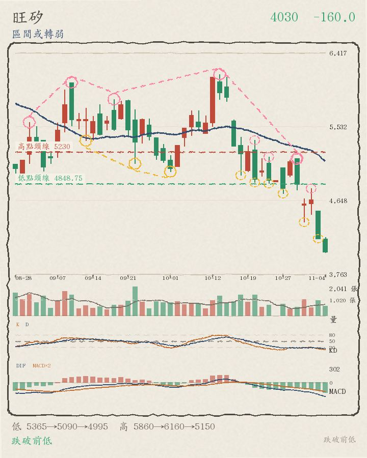
10:31 盤中 4030（-3.82%），比加權指數弱 3.18 個百分點、跌破月線 5193.75，離高點頸線 5230 還差 22.9%，轉折還沒走出明顯方向。
- 月線位置：現價 4030 在月線 5193.75 之下（-22.4%）；5 日線 4682 也在月線之下（短均在下）；月線向下
- 量能：以已過交易時間推估，今天成交量約是 20 日均量的 2.22 倍（爆量），比 20 日均量大不少；下跌卻量增，量價背離
- 關鍵價位：已跌破前一個轉折低點；高點頸線 5230 還在現價上方 22.9%；前一交易日高點 4525（低於 10.9%）；今天盤中高點 4205（低於 4.2%）；今天盤中低點 4020（高於 0.2%）
- 轉折結構：低點 5365、5090、4995 與高點 5860、6160、5150 都沒有明顯遞增，屬於區間震盪或轉弱；還沒確認的轉折低點 10-30 4390、11-03 4190；還沒確認的轉折高點 10-29 5150、11-02 4790（圖上虛線小圈）
大量 3167 上市
855 +34.0（+4.14%）
區間或轉弱 盤中成交值 26.59 億・全榜第 39 名（上市第 32 名）・相對大盤 +4.78
好條件 1/7：攻擊量（量增＋上漲）
不好條件 3/7：跌破前低、在月線之下、月線下彎
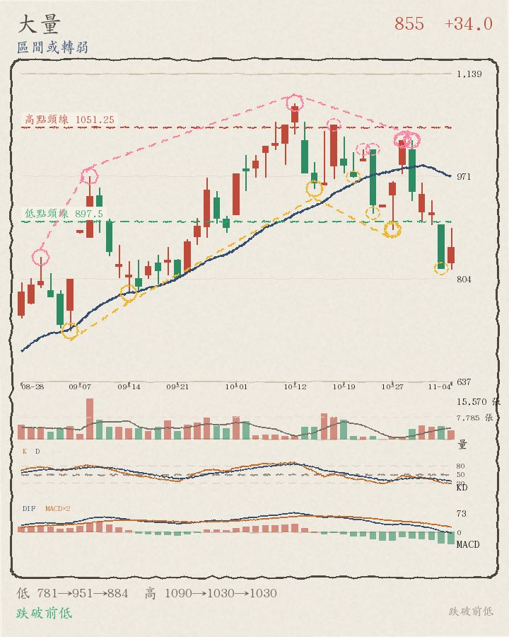
10:31 盤中 855（+4.14%），比加權指數強 4.78 個百分點、跌破月線 977.6，離高點頸線 1051.25 還差 18.7%，轉折還沒走出明顯方向。
- 月線位置：現價 855 在月線 977.6 之下（-12.5%）；5 日線 930.2 也在月線之下（短均在下）；月線向下
- 量能：以已過交易時間推估，今天成交量約是 20 日均量的 2.72 倍（爆量），比 20 日均量大不少；上漲又量增，量價配合
- 關鍵價位：已跌破前一個轉折低點；高點頸線 1051.25 還在現價上方 18.7%；前一交易日高點 892（低於 4.1%）；今天盤中高點 886（低於 3.5%）；今天盤中低點 820（高於 4.3%）
- 轉折結構：低點 781、951、884 與高點 1090、1030、1030 都沒有明顯遞增，屬於區間震盪或轉弱；還沒確認的轉折低點 10-27 884、11-03 821；還沒確認的轉折高點 10-28 1030、10-29 1030（圖上虛線小圈）
信驊 5274 上櫃
14030 -700.0（-4.75%）
區間或轉弱 盤中成交值 26.38 億・全榜第 40 名（上櫃第 8 名）・相對大盤 -4.11
好條件 0/7：無
不好條件 6/7：跌破前低、今日下跌、相對大盤弱、在月線之下、跌破昨日低點、月線下彎
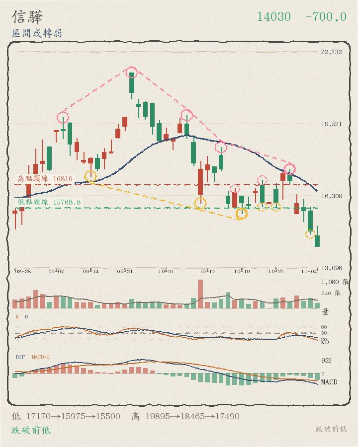
10:31 盤中 14030（-4.75%），比加權指數弱 4.11 個百分點、跌破月線 16787，離高點頸線 16810 還差 16.5%，轉折還沒走出明顯方向。
- 月線位置：現價 14030 在月線 16787 之下（-16.4%）；5 日線 16120 也在月線之下（短均在下）；月線向下
- 量能：以已過交易時間推估，今天成交量約是 20 日均量的 1.72 倍（爆量），比 20 日均量大不少；下跌卻量增，量價背離
- 關鍵價位：已跌破前一個轉折低點；高點頸線 16810 還在現價上方 16.5%；前一交易日高點 15800（低於 11.2%）；今天盤中高點 14975（低於 6.3%）；今天盤中低點 14030（高於 0.0%）
- 轉折結構：低點 17170、15975、15500 與高點 19895、18465、17490 都沒有明顯遞增，屬於區間震盪或轉弱；還沒確認的轉折低點 10-27 15800、11-03 14600；還沒確認的轉折高點 10-22 17000、10-29 17490（圖上虛線小圈）
群聯 8299 上櫃
1675 -15.0（-0.89%）
區間或轉弱 盤中成交值 26.23 億・全榜第 41 名（上櫃第 9 名）・相對大盤 -0.25
好條件 0/7：無
不好條件 7/7：跌破前低、今日下跌、相對大盤弱、在月線之下、貼近今日低點（1% 內）、跌破昨日低點、月線下彎
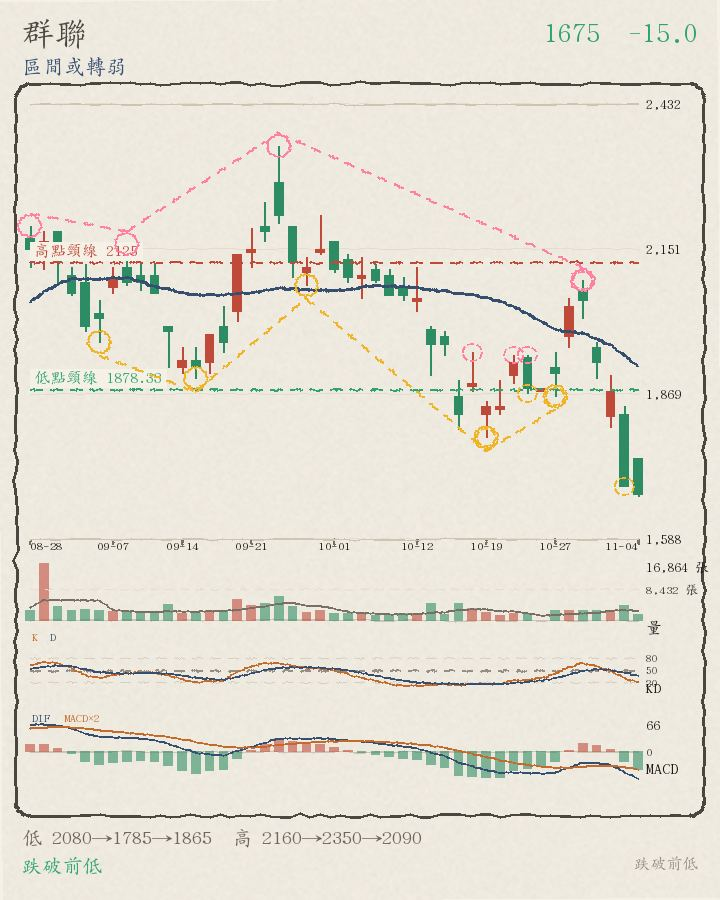
10:31 盤中 1675（-0.89%），比加權指數弱 0.25 個百分點、跌破月線 1944.5，離高點頸線 2125 還差 21.2%，轉折還沒走出明顯方向。
- 月線位置：現價 1675 在月線 1944.5 之下（-13.9%）；5 日線 1917 也在月線之下（短均在下）；月線向下
- 量能：以已過交易時間推估，今天成交量約是 20 日均量的 1.88 倍（爆量），比 20 日均量大不少；下跌卻量增，量價背離
- 關鍵價位：已跌破前一個轉折低點；高點頸線 2125 還在現價上方 21.2%；前一交易日高點 1845（低於 9.2%）；今天盤中高點 1745（低於 4.0%）；今天盤中低點 1670（高於 0.3%）
- 轉折結構：低點 2080、1785、1865 與高點 2160、2350、2090 都沒有明顯遞增，屬於區間震盪或轉弱；還沒確認的轉折低點 10-27 1865、11-03 1690；還沒確認的轉折高點 10-22 1945、10-29 2090（圖上虛線小圈）
金居 8358 上櫃
366 -10.0（-2.66%）
區間或轉弱 盤中成交值 25.73 億・全榜第 42 名（上櫃第 10 名）・相對大盤 -2.02
好條件 0/7：無
不好條件 7/7：跌破前低、今日下跌、相對大盤弱、在月線之下、貼近今日低點（1% 內）、跌破昨日低點、月線下彎
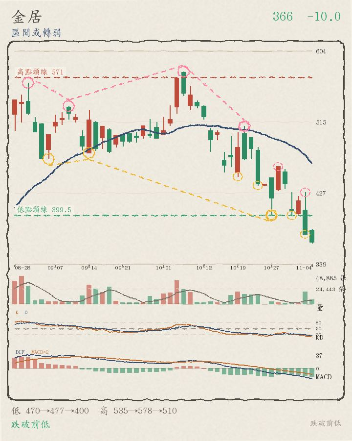
10:31 盤中 366（-2.66%），比加權指數弱 2.02 個百分點、跌破月線 474.275，離高點頸線 571 還差 35.9%，轉折還沒走出明顯方向。
- 月線位置：現價 366 在月線 474.275 之下（-22.8%）；5 日線 419.4 也在月線之下（短均在下）；月線向下
- 量能：以已過交易時間推估，今天成交量約是 20 日均量的 1.83 倍（爆量），比 20 日均量大不少；下跌卻量增，量價背離
- 關鍵價位：已跌破前一個轉折低點；高點頸線 571 還在現價上方 35.9%；前一交易日高點 428（低於 14.5%）；今天盤中高點 382（低於 4.2%）；今天盤中低點 364.5（高於 0.4%）
- 轉折結構：低點 469.5、477、399.5 與高點 535、578、510 都沒有明顯遞增，屬於區間震盪或轉弱；還沒確認的轉折低點 10-30 399.5、11-03 376；還沒確認的轉折高點 10-28 460、11-03 428（圖上虛線小圈）
富世達 6805 上市
2050 -110.0（-5.09%）
區間或轉弱 盤中成交值 24.91 億・全榜第 43 名（上市第 33 名）・相對大盤 -4.45
好條件 0/7：無
不好條件 6/7：跌破前低、今日下跌、相對大盤弱、在月線之下、跌破昨日低點、月線下彎
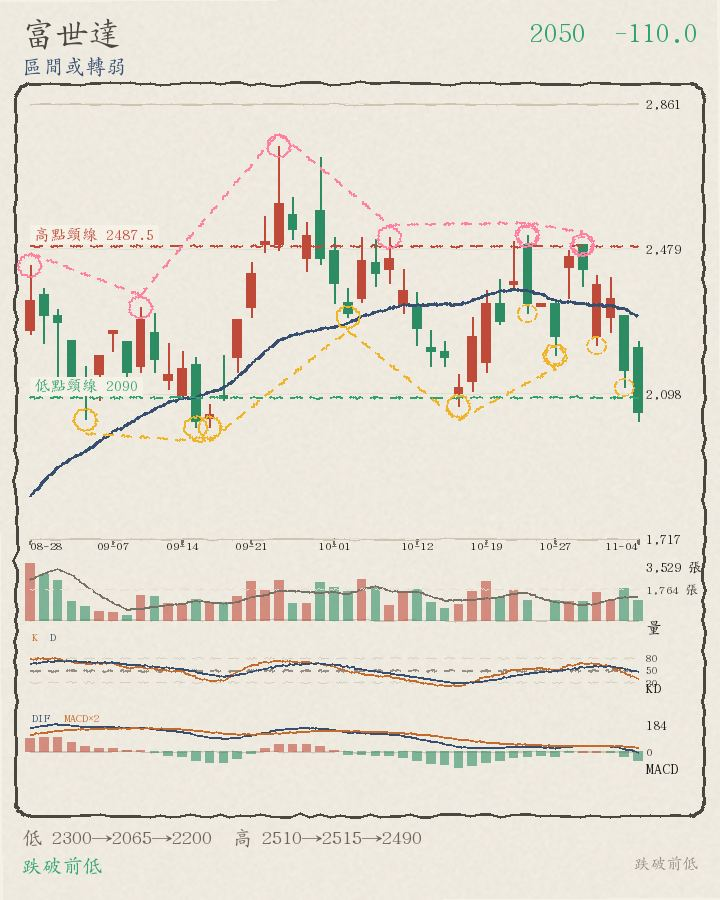
10:31 盤中 2050（-5.09%），比加權指數弱 4.45 個百分點、跌破月線 2322.5，離高點頸線 2487.5 還差 17.6%，轉折還沒走出明顯方向。
- 月線位置：現價 2050 在月線 2322.5 之下（-11.7%）；5 日線 2356 也在月線之上（短均在上）；月線向下
- 量能：以已過交易時間推估，今天成交量約是 20 日均量的 2.41 倍（爆量），比 20 日均量大不少；下跌卻量增，量價背離
- 關鍵價位：已跌破前一個轉折低點；高點頸線 2487.5 還在現價上方 17.6%；前一交易日高點 2305（低於 11.1%）；今天盤中高點 2235（低於 8.3%）；今天盤中低點 2025（高於 1.2%）
- 轉折結構：低點 2300、2065、2200 與高點 2510、2515、2490 都沒有明顯遞增，屬於區間震盪或轉弱；還沒確認的轉折低點 10-30 2225、11-03 2115；還沒確認的轉折高點 10-22 2515、10-29 2490（圖上虛線小圈）
晶豪科 3006 上市
227.5 -15.0（-6.19%）
區間或轉弱 盤中成交值 22.66 億・全榜第 44 名（上市第 34 名）・相對大盤 -5.55
好條件 0/7：無
不好條件 6/7：今日下跌、相對大盤弱、在月線之下、貼近今日低點（1% 內）、跌破昨日低點、月線下彎
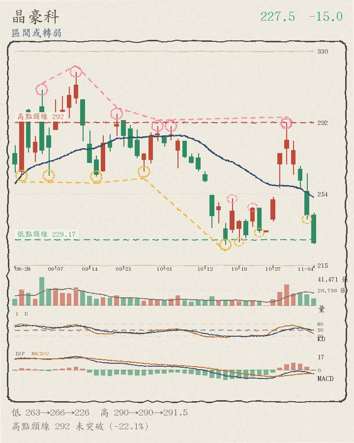
10:31 盤中 227.5（-6.19%），比加權指數弱 5.55 個百分點、跌破月線 254.475，離高點頸線 292 還差 22.1%，轉折還沒走出明顯方向。
- 月線位置：現價 227.5 在月線 254.475 之下（-10.6%）；5 日線 267.7 也在月線之上（短均在上）；月線向下
- 量能：以已過交易時間推估，今天成交量約是 20 日均量的 2.81 倍（爆量），比 20 日均量大不少；下跌卻量增，量價背離
- 關鍵價位：高點頸線 292 還沒突破，差 22.1%；前一交易日高點 264.5（低於 14.0%）；今天盤中高點 243.5（低於 6.6%）；今天盤中低點 227（高於 0.2%）
- 轉折結構：低點 263、265.5、226.5 與高點 290、290、291.5 都沒有明顯遞增，屬於區間震盪或轉弱；還沒確認的轉折低點 10-22 233、11-03 240；還沒確認的轉折高點 10-21 246.5、10-29 291.5（圖上虛線小圈）
智邦 2345 上市
1485 -10.0（-0.67%）
區間或轉弱 盤中成交值 22.56 億・全榜第 45 名（上市第 35 名）・相對大盤 -0.03
好條件 0/7：無
不好條件 5/7：跌破前低、今日下跌、相對大盤弱、在月線之下、月線下彎
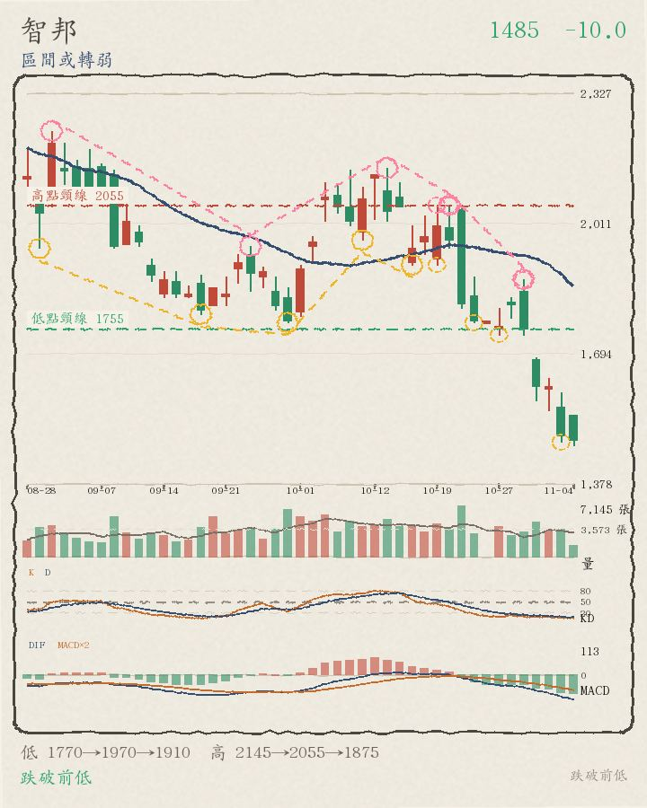
10:31 盤中 1485（-0.67%），比加權指數弱 0.03 個百分點、跌破月線 1887.75，離高點頸線 2055 還差 27.7%，轉折還沒走出明顯方向。
- 月線位置：現價 1485 在月線 1887.75 之下（-21.3%）；5 日線 1659 也在月線之下（短均在下）；月線向下
- 量能：以已過交易時間推估，今天成交量約是 20 日均量的 1.04 倍（量平），跟 20 日均量差不多
- 關鍵價位：已跌破前一個轉折低點；高點頸線 2055 還在現價上方 27.7%；前一交易日高點 1600（低於 7.2%）；今天盤中高點 1545（低於 3.9%）；今天盤中低點 1470（高於 1.0%）
- 轉折結構：低點 1770、1970、1910 與高點 2145、2055、1875 都沒有明顯遞增，屬於區間震盪或轉弱；還沒確認的轉折低點 10-27 1740、11-03 1480；還沒確認的轉折高點 10-20 2055、10-29 1875（圖上虛線小圈）
友達 2409 上市
28.65 -0.1（-0.52%）
底部墊高、未過前高 盤中成交值 21.93 億・全榜第 46 名（上市第 36 名）・相對大盤 +0.12
好條件 1/7：底底高
不好條件 6/7：跌破前低、今日下跌、在月線之下、貼近今日低點（1% 內）、跌破昨日低點、月線下彎
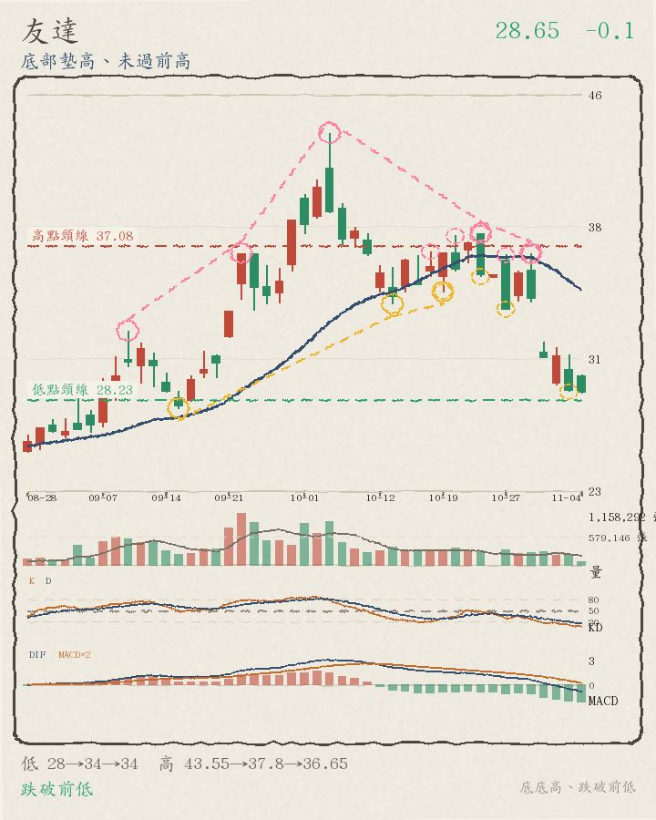
10:31 盤中 28.65（-0.52%），比加權指數強 0.12 個百分點、跌破月線 35.078，離高點頸線 37.08 還差 22.7%，底部還在墊高（但高點沒同步創高）。
- 月線位置：現價 28.65 在月線 35.078 之下（-18.3%）；5 日線 31.96 也在月線之下（短均在下）；月線向下
- 量能：以已過交易時間推估，今天成交量約是 20 日均量的 0.60 倍（量縮），比 20 日均量少很多
- 關鍵價位：已跌破前一個轉折低點；高點頸線 37.08 還在現價上方 22.7%；前一交易日高點 30.8（低於 7.0%）；今天盤中高點 29.65（低於 3.4%）；今天盤中低點 28.6（高於 0.2%）
- 轉折結構：低點 27.75、33.75、34.45 墊高（底底高），但高點 43.55、37.8、36.65 沒有同步創高；還沒確認的轉折低點 10-27 33.45、11-03 28.7；還沒確認的轉折高點 10-27 36.55、10-29 36.65（圖上虛線小圈）
緯穎 6669 上市
1785 +15.0（+0.85%）
區間或轉弱 盤中成交值 21.49 億・全榜第 47 名（上市第 37 名）・相對大盤 +1.49
好條件 0/7：無
不好條件 4/7：跌破前低、在月線之下、貼近今日低點（1% 內）、月線下彎
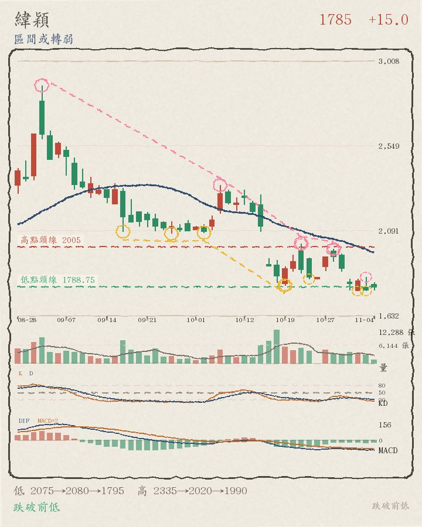
10:31 盤中 1785（+0.85%），比加權指數強 1.49 個百分點、跌破月線 1990.5，離高點頸線 2005 還差 11.0%，轉折還沒走出明顯方向。
- 月線位置：現價 1785 在月線 1990.5 之下（-10.3%）；5 日線 1847 也在月線之下（短均在下）；月線向下
- 量能：以已過交易時間推估，今天成交量約是 20 日均量的 0.80 倍（量平），比 20 日均量少很多；上漲但量縮，量價背離
- 關鍵價位：已跌破前一個轉折低點；高點頸線 2005 還在現價上方 11.0%；前一交易日高點 1840（低於 3.0%）；今天盤中高點 1810（低於 1.4%）；今天盤中低點 1770（高於 0.8%）
- 轉折結構：低點 2075、2080、1795 與高點 2335、2020、1990 都沒有明顯遞增，屬於區間震盪或轉弱；還沒確認的轉折低點 11-02 1765、11-03 1765；還沒確認的轉折高點 10-28 1990、11-03 1840（圖上虛線小圈）
台虹 8039 上市
221.5 +1.0（+0.45%）
區間或轉弱 盤中成交值 21.06 億・全榜第 48 名（上市第 38 名）・相對大盤 +1.09
好條件 0/7：無
不好條件 4/7：跌破前低、在月線之下、貼近今日低點（1% 內）、月線下彎
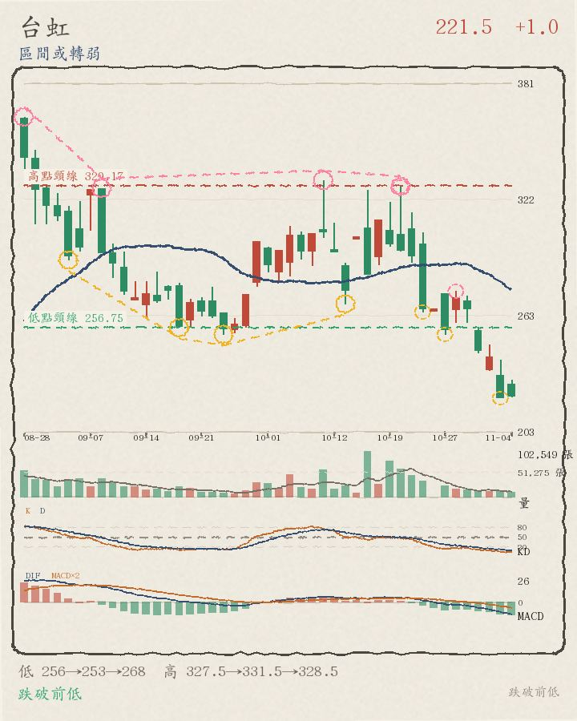
10:31 盤中 221.5（+0.45%），比加權指數強 1.09 個百分點、跌破月線 279.95，離高點頸線 329.17 還差 32.7%，轉折還沒走出明顯方向。
- 月線位置：現價 221.5 在月線 279.95 之下（-20.9%）；5 日線 249 也在月線之下（短均在下）；月線向下
- 量能：以已過交易時間推估，今天成交量約是 20 日均量的 0.82 倍（量平），比 20 日均量少很多；上漲但量縮，量價背離
- 關鍵價位：已跌破前一個轉折低點；高點頸線 329.17 還在現價上方 32.7%；前一交易日高點 240（低於 7.7%）；今天盤中高點 229.5（低於 3.5%）；今天盤中低點 221（高於 0.2%）
- 轉折結構：低點 256.5、253、268.5 與高點 327.5、331.5、328.5 都沒有明顯遞增，屬於區間震盪或轉弱；還沒確認的轉折低點 10-27 253、11-03 220.5；還沒確認的轉折高點 10-20 328.5、10-28 275（圖上虛線小圈）
世芯-KY 3661 上市
3150 +10.0（+0.32%）
區間或轉弱 盤中成交值 20.13 億・全榜第 49 名（上市第 39 名）・相對大盤 +0.96
好條件 0/7：無
不好條件 4/7：跌破前低、在月線之下、貼近今日低點（1% 內）、月線下彎
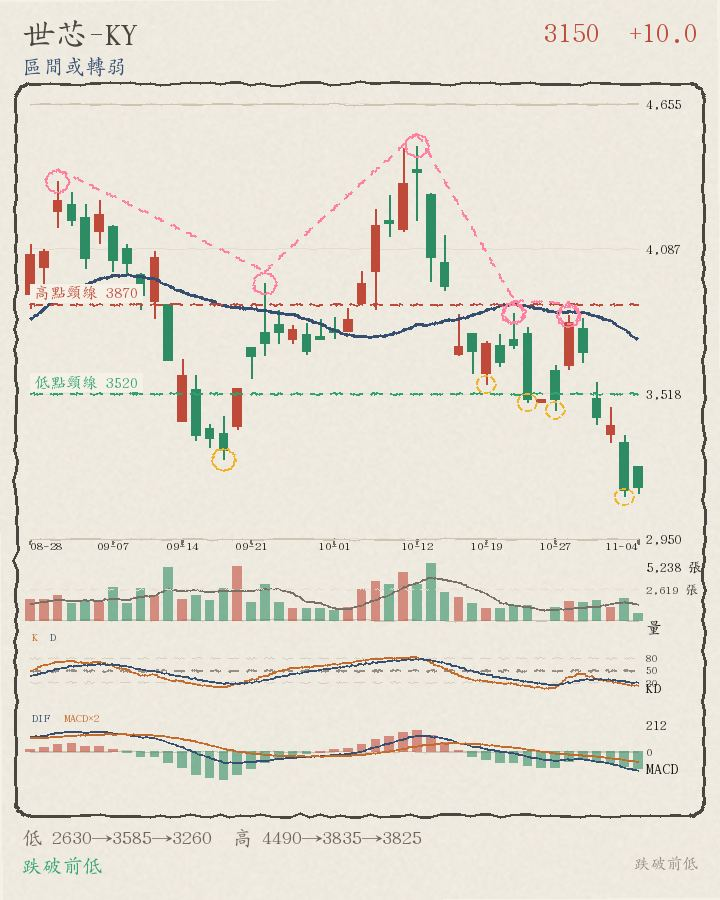
10:31 盤中 3150（+0.32%），比加權指數強 0.96 個百分點、跌破月線 3771.75，離高點頸線 3870 還差 18.6%，轉折還沒走出明顯方向。
- 月線位置：現價 3150 在月線 3771.75 之下（-16.5%）；5 日線 3488 也在月線之下（短均在下）；月線向下
- 量能：以已過交易時間推估，今天成交量約是 20 日均量的 0.86 倍（量平），比 20 日均量少一些
- 關鍵價位：已跌破前一個轉折低點；高點頸線 3870 還在現價上方 18.6%；前一交易日高點 3355（低於 6.1%）；今天盤中高點 3235（低於 2.6%）；今天盤中低點 3130（高於 0.6%）
- 轉折結構：低點 2630、3585、3260 與高點 4490、3835、3825 都沒有明顯遞增，屬於區間震盪或轉弱；還沒確認的轉折低點 10-27 3455、11-03 3115；還沒確認的轉折高點 10-21 3835、10-28 3825（圖上虛線小圈）
群創 3481 上市
40.9 -0.3（-0.73%）
區間或轉弱 盤中成交值 19.8 億・全榜第 50 名（上市第 40 名）・相對大盤 -0.09
好條件 0/7：無
不好條件 6/7：跌破前低、今日下跌、相對大盤弱、在月線之下、跌破昨日低點、月線下彎

10:31 盤中 40.9（-0.73%），比加權指數弱 0.09 個百分點、跌破月線 48.02，離高點頸線 49.12 還差 16.7%，轉折還沒走出明顯方向。
- 月線位置：現價 40.9 在月線 48.02 之下（-14.8%）；5 日線 44.55 也在月線之下（短均在下）；月線向下
- 量能：以已過交易時間推估，今天成交量約是 20 日均量的 1.12 倍（量增），比 20 日均量大一些；下跌卻量增，量價背離
- 關鍵價位：已跌破前一個轉折低點；高點頸線 49.12 還在現價上方 16.7%；前一交易日高點 44.4（低於 7.9%）；今天盤中高點 42.15（低於 3.0%）；今天盤中低點 40.9（高於 0.0%）
- 轉折結構：低點 46.25、48.55、45.65 與高點 52.2、56.2、49.7 都沒有明顯遞增，屬於區間震盪或轉弱；還沒確認的轉折低點 10-27 46.25、11-03 41.2；還沒確認的轉折高點 10-29 48.7、11-02 45.35（圖上虛線小圈）
旺宏 2337 上市
87.4 -0.9（-1.02%）
區間或轉弱 盤中成交值 19.75 億・全榜第 51 名（上市第 41 名）・相對大盤 -0.38
好條件 0/7：無
不好條件 7/7：跌破前低、今日下跌、相對大盤弱、在月線之下、貼近今日低點（1% 內）、跌破昨日低點、月線下彎
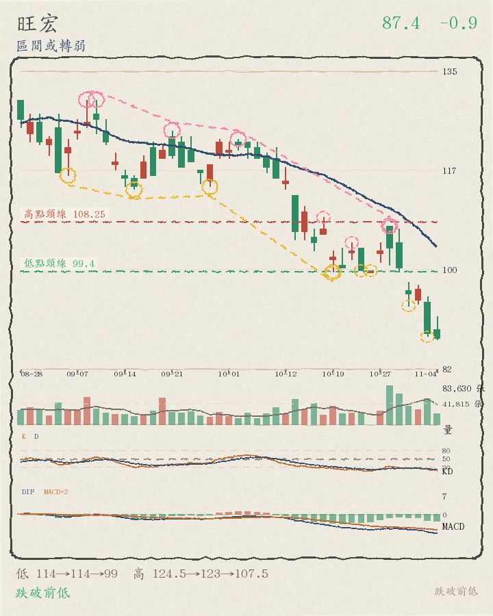
10:31 盤中 87.4（-1.02%），比加權指數弱 0.38 個百分點、跌破月線 105.445，離高點頸線 108.25 還差 19.3%，轉折還沒走出明顯方向。
- 月線位置：現價 87.4 在月線 105.445 之下（-17.1%）；5 日線 96.68 也在月線之下（短均在下）；月線向下
- 量能：以已過交易時間推估，今天成交量約是 20 日均量的 1.98 倍（爆量），比 20 日均量大不少；下跌卻量增，量價背離
- 關鍵價位：已跌破前一個轉折低點；高點頸線 108.25 還在現價上方 19.3%；前一交易日高點 94.8（低於 7.8%）；今天盤中高點 91.3（低於 4.3%）；今天盤中低點 87.1（高於 0.3%）
- 轉折結構：低點 114、114.5、99.2 與高點 124.5、123、107.5 都沒有明顯遞增，屬於區間震盪或轉弱；還沒確認的轉折低點 10-30 93.2、11-03 87.7；還沒確認的轉折高點 10-21 104.5、10-28 107.5（圖上虛線小圈）
全新 2455 上市
377 -28.0（-6.91%）
區間或轉弱 盤中成交值 19.57 億・全榜第 52 名（上市第 42 名）・相對大盤 -6.27
好條件 0/7：無
不好條件 7/7：跌破前低、今日下跌、相對大盤弱、在月線之下、貼近今日低點（1% 內）、跌破昨日低點、月線下彎
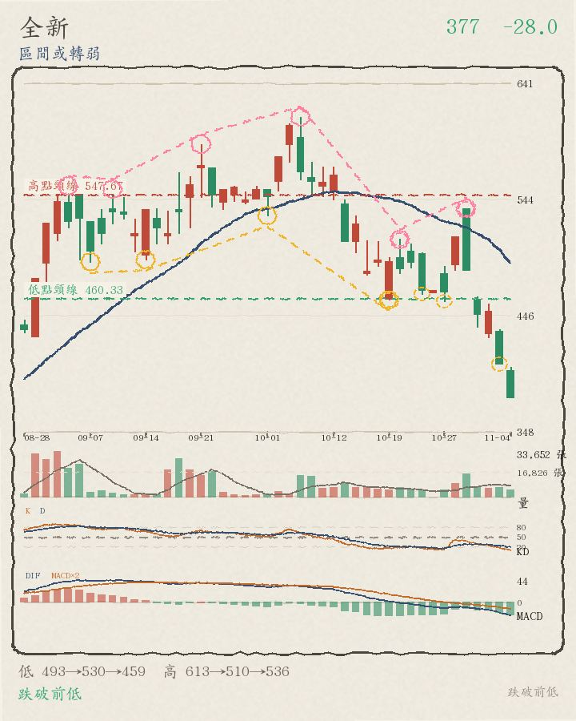
10:31 盤中 377（-6.91%），比加權指數弱 6.27 個百分點、跌破月線 501.325，離高點頸線 547.67 還差 31.2%，轉折還沒走出明顯方向。
- 月線位置：現價 377 在月線 501.325 之下（-24.8%）；5 日線 459.5 也在月線之下（短均在下）；月線向下
- 量能：以已過交易時間推估，今天成交量約是 20 日均量的 2.00 倍（爆量），比 20 日均量大不少；下跌卻量增，量價背離
- 關鍵價位：已跌破前一個轉折低點；高點頸線 547.67 還在現價上方 31.2%；前一交易日高點 434（低於 13.1%）；今天盤中高點 402.5（低於 6.3%）；今天盤中低點 376.5（高於 0.1%）
- 轉折結構：低點 493、530、459 與高點 613、510、536 都沒有明顯遞增，屬於區間震盪或轉弱；還沒確認的轉折低點 10-27 458、11-03 405；還沒確認的轉折高點 10-20 510、10-29 536（圖上虛線小圈）
藥華藥 6446 上市
1255 +30.0（+2.45%）
區間或轉弱 盤中成交值 18.65 億・全榜第 53 名（上市第 43 名）・相對大盤 +3.09
好條件 4/7：站上月線、月線向上、突破頸線、攻擊量（量增＋上漲）
不好條件 0/7：無
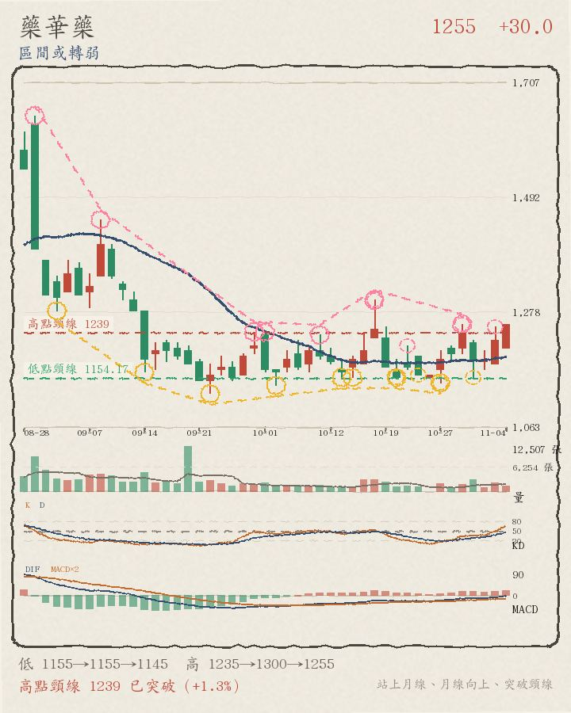
10:31 盤中 1255（+2.45%），比加權指數強 3.09 個百分點、站上月線 1190.75，已突破高點頸線 1239，轉折還沒走出明顯方向。
- 月線位置：現價 1255 在月線 1190.75 之上（+5.4%）；5 日線 1209 也在月線之上（短均在上）；月線向上
- 量能：以已過交易時間推估，今天成交量約是 20 日均量的 2.60 倍（爆量），比 20 日均量大不少；上漲又量增，量價配合
- 關鍵價位：高點頸線 1239 已站上；前一交易日高點 1250（高於 0.4%）；今天盤中高點 1255（高於 0.0%）；今天盤中低點 1210（高於 3.7%）
- 轉折結構：低點 1155、1155、1145 與高點 1235、1300、1255 都沒有明顯遞增，屬於區間震盪或轉弱；還沒確認的轉折低點 10-27 1145、10-30 1155；還沒確認的轉折高點 10-29 1255、11-03 1250（圖上虛線小圈）
台表科 6278 上市
217 -12.0（-5.24%）
底部墊高、未過前高 盤中成交值 17.67 億・全榜第 54 名（上市第 44 名）・相對大盤 -4.60
好條件 2/7：月線向上、底底高
不好條件 5/7：跌破前低、今日下跌、相對大盤弱、在月線之下、跌破昨日低點
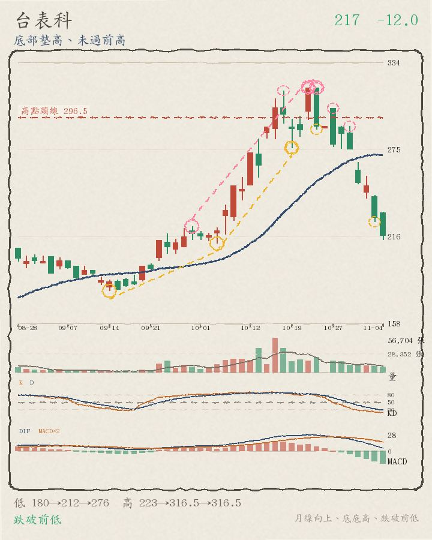
10:31 盤中 217（-5.24%），比加權指數弱 4.60 個百分點、跌破月線 271.325，離高點頸線 296.5 還差 26.8%，底部還在墊高（但高點沒同步創高）。
- 月線位置：現價 217 在月線 271.325 之下（-20.0%）；5 日線 258.5 也在月線之下（短均在下）；月線向上
- 量能：以已過交易時間推估，今天成交量約是 20 日均量的 1.15 倍（量增），比 20 日均量大不少；下跌卻量增，量價背離
- 關鍵價位：已跌破前一個轉折低點；高點頸線 296.5 還在現價上方 26.8%；前一交易日高點 244（低於 11.1%）；今天盤中高點 232.5（低於 6.7%）；今天盤中低點 214（高於 1.4%）
- 轉折結構：低點 179.5、211.5、276 墊高（底底高），但高點 223、316.5、316.5 沒有同步創高；還沒確認的轉折低點 10-22 288.5、11-03 226；還沒確認的轉折高點 10-27 302.5、10-29 290.5（圖上虛線小圈）
矽力*-KY 6415 上市
457 -15.5（-3.28%）
上升趨勢（底底高＋頭頭高） 盤中成交值 17.22 億・全榜第 55 名（上市第 45 名）・相對大盤 -2.64
好條件 3/7：月線向上、底底高、頭頭高
不好條件 5/7：今日下跌、相對大盤弱、在月線之下、貼近今日低點（1% 內）、跌破昨日低點
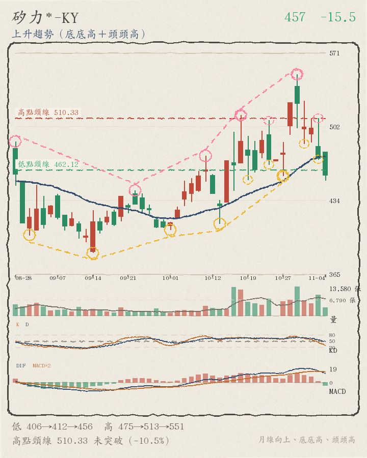
10:31 盤中 457（-3.28%），比加權指數弱 2.64 個百分點、跌破月線 474，離高點頸線 510.33 還差 10.5%，轉折結構仍是底底高＋頭頭高。
- 月線位置：現價 457 在月線 474 之下（-3.6%）；5 日線 504.9 也在月線之上（短均在上）；月線向上
- 量能：以已過交易時間推估，今天成交量約是 20 日均量的 1.88 倍（爆量），比 20 日均量大不少；下跌卻量增，量價背離
- 關鍵價位：高點頸線 510.33 還沒突破，差 10.5%；前一交易日高點 510（低於 10.4%）；今天盤中高點 479（低於 4.6%）；今天盤中低點 452.5（高於 1.0%）
- 轉折結構：低點 406.5、412、456.5 一路墊高、高點 475、513、551 也一路墊高，是底底高＋頭頭高；還沒確認的轉折低點 10-30 486.5、11-03 472；還沒確認的轉折高點 10-29 551、11-03 510（圖上虛線小圈）
萬潤 6187 上櫃
1055 -25.0（-2.31%）
區間或轉弱 盤中成交值 17.16 億・全榜第 56 名（上櫃第 11 名）・相對大盤 -1.67
好條件 0/7：無
不好條件 6/7：跌破前低、今日下跌、相對大盤弱、在月線之下、跌破昨日低點、月線下彎

10:31 盤中 1055（-2.31%），比加權指數弱 1.67 個百分點、跌破月線 1381.5，離高點頸線 1432.5 還差 26.4%，轉折還沒走出明顯方向。
- 月線位置：現價 1055 在月線 1381.5 之下（-23.6%）；5 日線 1214 也在月線之下（短均在下）；月線向下
- 量能：以已過交易時間推估，今天成交量約是 20 日均量的 1.71 倍（爆量），比 20 日均量大不少；下跌卻量增，量價背離
- 關鍵價位：已跌破前一個轉折低點；高點頸線 1432.5 還在現價上方 26.4%；前一交易日高點 1155（低於 8.7%）；今天盤中高點 1085（低於 2.8%）；今天盤中低點 1030（高於 2.4%）
- 轉折結構：低點 1185、1180、1180 與高點 1270、1680、1360 都沒有明顯遞增，屬於區間震盪或轉弱；還沒確認的轉折低點 10-30 1135、11-03 1080；還沒確認的轉折高點 10-28 1360、11-02 1210（圖上虛線小圈）
鴻勁 7769 上市
4425 -45.0（-1.01%）
區間或轉弱 盤中成交值 16.33 億・全榜第 57 名（上市第 46 名）・相對大盤 -0.37
好條件 0/7：無
不好條件 5/7：跌破前低、今日下跌、相對大盤弱、在月線之下、月線下彎
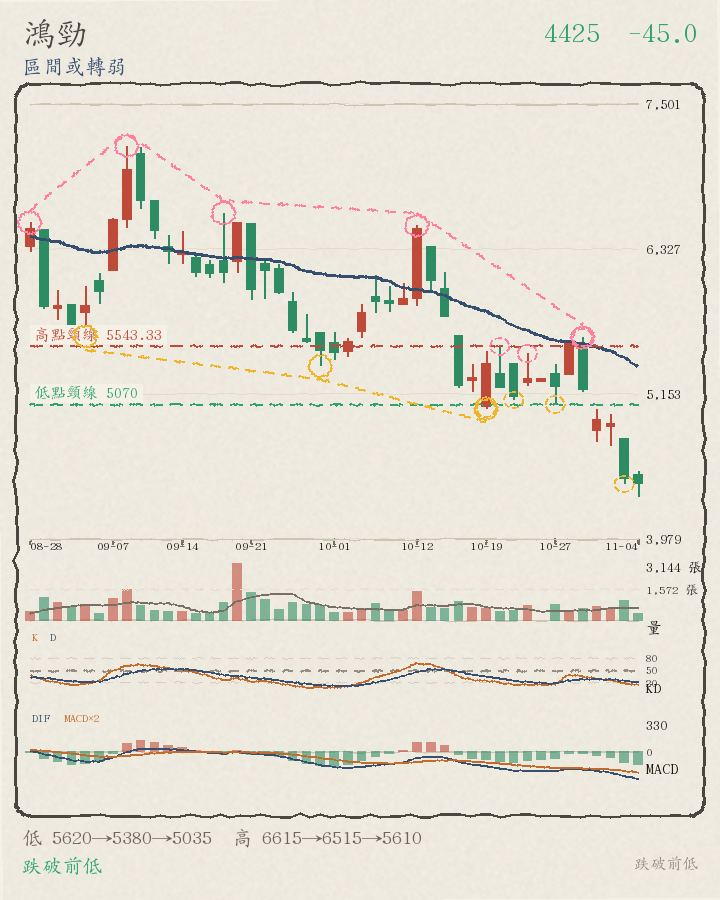
10:31 盤中 4425（-1.01%），比加權指數弱 0.37 個百分點、跌破月線 5448.25，離高點頸線 5543.33 還差 20.2%，轉折還沒走出明顯方向。
- 月線位置：現價 4425 在月線 5448.25 之下（-18.8%）；5 日線 5018 也在月線之下（短均在下）；月線向下
- 量能：以已過交易時間推估，今天成交量約是 20 日均量的 1.55 倍（爆量），比 20 日均量大不少；下跌卻量增，量價背離
- 關鍵價位：已跌破前一個轉折低點；高點頸線 5543.33 還在現價上方 20.2%；前一交易日高點 4790（低於 7.6%）；今天盤中高點 4525（低於 2.2%）；今天盤中低點 4320（高於 2.4%）
- 轉折結構：低點 5620、5380、5035 與高點 6615、6515、5610 都沒有明顯遞增，屬於區間震盪或轉弱；還沒確認的轉折低點 10-27 5070、11-03 4425；還沒確認的轉折高點 10-22 5480、10-29 5610（圖上虛線小圈）
華通 2313 上市
183 -3.0（-1.61%）
上升趨勢（底底高＋頭頭高） 盤中成交值 15.77 億・全榜第 58 名（上市第 47 名）・相對大盤 -0.97
好條件 2/7：底底高、頭頭高
不好條件 6/7：跌破前低、今日下跌、相對大盤弱、在月線之下、跌破昨日低點、月線下彎
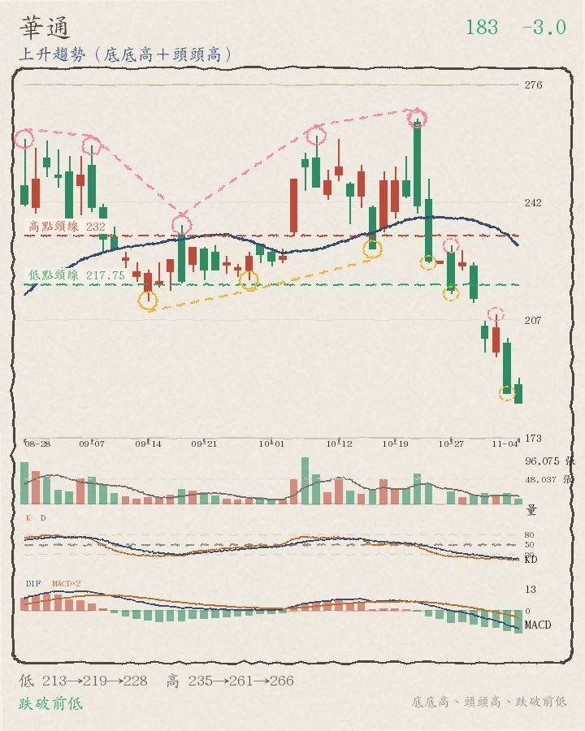
10:31 盤中 183（-1.61%），比加權指數弱 0.97 個百分點、跌破月線 232.2，離高點頸線 232 還差 21.1%，轉折結構仍是底底高＋頭頭高。
- 月線位置：現價 183 在月線 232.2 之下（-21.2%）；5 日線 206.1 也在月線之下（短均在下）；月線向下
- 量能：以已過交易時間推估，今天成交量約是 20 日均量的 0.73 倍（量平），比 20 日均量少很多
- 關鍵價位：已跌破前一個轉折低點；高點頸線 232 還在現價上方 21.1%；前一交易日高點 202（低於 9.4%）；今天盤中高點 190.5（低於 3.9%）；今天盤中低點 183（高於 0.0%）
- 轉折結構：低點 213、219、228 一路墊高、高點 235、261、266 也一路墊高，是底底高＋頭頭高；還沒確認的轉折低點 10-27 215、11-03 186；還沒確認的轉折高點 10-27 229、11-02 209（圖上虛線小圈）
力旺 3529 上櫃
2085 -75.0（-3.47%）
區間或轉弱 盤中成交值 15.64 億・全榜第 59 名（上櫃第 12 名）・相對大盤 -2.83
好條件 0/7：無
不好條件 7/7：跌破前低、今日下跌、相對大盤弱、在月線之下、貼近今日低點（1% 內）、跌破昨日低點、月線下彎
10:31 盤中 2085（-3.47%），比加權指數弱 2.83 個百分點、跌破月線 2690.25，離高點頸線 2740 還差 23.9%，轉折還沒走出明顯方向。
- 月線位置：現價 2085 在月線 2690.25 之下（-22.5%）；5 日線 2448 也在月線之下（短均在下）；月線向下
- 量能：以已過交易時間推估，今天成交量約是 20 日均量的 2.54 倍（爆量），比 20 日均量大不少；下跌卻量增，量價背離
- 關鍵價位：已跌破前一個轉折低點；高點頸線 2740 還在現價上方 23.9%；前一交易日高點 2375（低於 12.2%）；今天盤中高點 2205（低於 5.4%）；今天盤中低點 2075（高於 0.5%）
- 轉折結構：低點 2090、2530、2470 與高點 2875、3635、2675 都沒有明顯遞增，屬於區間震盪或轉弱；還沒確認的轉折低點 10-27 2470、11-03 2160；還沒確認的轉折高點 10-20 2770、10-29 2675（圖上虛線小圈）
緯創 3231 上市
176 -0.5（-0.28%）
高點墊高、底部不穩 盤中成交值 15.39 億・全榜第 60 名（上市第 48 名）・相對大盤 +0.36
好條件 1/7：頭頭高
不好條件 5/7：今日下跌、在月線之下、貼近今日低點（1% 內）、跌破昨日低點、月線下彎
10:31 盤中 176（-0.28%），比加權指數強 0.36 個百分點、跌破月線 186.675，離高點頸線 187.75 還差 6.3%，高點還在墊高（但底部沒同步墊高）。
- 月線位置：現價 176 在月線 186.675 之下（-5.7%）；5 日線 184.9 也在月線之下（短均在下）；月線向下
- 量能：以已過交易時間推估，今天成交量約是 20 日均量的 0.67 倍（量縮），比 20 日均量少很多
- 關鍵價位：高點頸線 187.75 還沒突破，差 6.3%；前一交易日高點 182（低於 3.3%）；今天盤中高點 179.5（低於 1.9%）；今天盤中低點 175（高於 0.6%）
- 轉折結構：高點 190.5、194.5、199.5 墊高（頭頭高），但低點 178、182.5、173.5 沒有同步墊高；還沒確認的轉折低點 10-30 179.5、11-03 176.5；還沒確認的轉折高點 10-28 196、11-02 185（圖上虛線小圈）
華星光 4979 上櫃
370.5 -13.0（-3.39%）
區間或轉弱 盤中成交值 15.33 億・全榜第 61 名（上櫃第 13 名）・相對大盤 -2.75
好條件 0/7：無
不好條件 6/7：跌破前低、今日下跌、相對大盤弱、在月線之下、跌破昨日低點、月線下彎
10:31 盤中 370.5（-3.39%），比加權指數弱 2.75 個百分點、跌破月線 505.225，離高點頸線 654 還差 43.3%，轉折還沒走出明顯方向。
- 月線位置：現價 370.5 在月線 505.225 之下（-26.7%）；5 日線 444.4 也在月線之下（短均在下）；月線向下
- 量能：以已過交易時間推估，今天成交量約是 20 日均量的 2.35 倍（爆量），比 20 日均量大不少；下跌卻量增，量價背離
- 關鍵價位：已跌破前一個轉折低點；高點頸線 654 還在現價上方 43.3%；前一交易日高點 409（低於 9.4%）；今天盤中高點 388（低於 4.5%）；今天盤中低點 370.5（高於 0.0%）
- 轉折結構：低點 501、545、445 與高點 622、588、531 都沒有明顯遞增，屬於區間震盪或轉弱；還沒確認的轉折低點 10-27 450、11-03 383.5；還沒確認的轉折高點 10-22 490、10-29 531（圖上虛線小圈）
頎邦 6147 上櫃
169 -3.5（-2.03%）
區間或轉弱 盤中成交值 15.09 億・全榜第 62 名（上櫃第 14 名）・相對大盤 -1.39
好條件 0/7：無
不好條件 6/7：跌破前低、今日下跌、相對大盤弱、在月線之下、跌破昨日低點、月線下彎
10:31 盤中 169（-2.03%），比加權指數弱 1.39 個百分點、跌破月線 210.825，離高點頸線 220 還差 23.2%，轉折還沒走出明顯方向。
- 月線位置：現價 169 在月線 210.825 之下（-19.8%）；5 日線 197.1 也在月線之下（短均在下）；月線向下
- 量能：以已過交易時間推估，今天成交量約是 20 日均量的 0.88 倍（量平），比 20 日均量少一些
- 關鍵價位：已跌破前一個轉折低點；高點頸線 220 還在現價上方 23.2%；前一交易日高點 187.5（低於 9.9%）；今天盤中高點 174（低於 2.9%）；今天盤中低點 169（高於 0.0%）
- 轉折結構：低點 208、211、194.5 與高點 238、217、223 都沒有明顯遞增，屬於區間震盪或轉弱；還沒確認的轉折低點 10-27 199.5、11-03 172.5；還沒確認的轉折高點 10-21 217、10-28 223（圖上虛線小圈）
金山電 8042 上櫃
123.5 +2.5（+2.07%）
區間或轉弱 盤中成交值 15.09 億・全榜第 63 名（上櫃第 15 名）・相對大盤 +2.71
好條件 2/7：月線向上、攻擊量（量增＋上漲）
不好條件 2/7：跌破前低、在月線之下
10:31 盤中 123.5（+2.07%），比加權指數強 2.71 個百分點、跌破月線 135.675，離高點頸線 141 還差 12.4%，轉折還沒走出明顯方向。
- 月線位置：現價 123.5 在月線 135.675 之下（-9.0%）；5 日線 131.4 也在月線之下（短均在下）；月線向上
- 量能：以已過交易時間推估，今天成交量約是 20 日均量的 2.26 倍（爆量），比 20 日均量大不少；上漲又量增，量價配合
- 關鍵價位：已跌破前一個轉折低點；高點頸線 141 還在現價上方 12.4%；前一交易日高點 137.5（低於 10.2%）；今天盤中高點 129.5（低於 4.6%）；今天盤中低點 122（高於 1.2%）
- 轉折結構：低點 110、129、129.5 與高點 166、154.5、144.5 都沒有明顯遞增，屬於區間震盪或轉弱；還沒確認的轉折低點 10-29 131、11-03 120.5；還沒確認的轉折高點 10-29 144.5、11-03 137.5（圖上虛線小圈）
台新新光金 2887 上市
40.55 -0.7（-1.70%）
底部墊高、未過前高 盤中成交值 14.55 億・全榜第 64 名（上市第 49 名）・相對大盤 -1.06
好條件 3/7：月線向上、底底高、守住今日高檔（距今日高點 1% 內）
不好條件 5/7：跌破前低、今日下跌、相對大盤弱、在月線之下、跌破昨日低點
10:31 盤中 40.55（-1.70%），比加權指數弱 1.06 個百分點、跌破月線 41.973，離高點頸線 43.31 還差 6.4%，底部還在墊高（但高點沒同步創高）。
- 月線位置：現價 40.55 在月線 41.973 之下（-3.4%）；5 日線 41.92 也在月線之下（短均在下）；月線向上
- 量能：以已過交易時間推估，今天成交量約是 20 日均量的 2.30 倍（爆量），比 20 日均量大不少；下跌卻量增，量價背離
- 關鍵價位：已跌破前一個轉折低點；高點頸線 43.31 還在現價上方 6.4%；前一交易日高點 42（低於 3.5%）；今天盤中高點 40.95（低於 1.0%）；今天盤中低點 39.2（高於 3.4%）
- 轉折結構：低點 35.7、40.1、40.9 墊高（底底高），但高點 44.8、43.5、42.9 沒有同步創高；還沒確認的轉折低點 10-30 41.4、11-03 40.65；還沒確認的轉折高點 10-22 42.55、10-29 42.9（圖上虛線小圈）
尖點 8021 上市
374.5 -8.0（-2.09%）
區間或轉弱 盤中成交值 14.5 億・全榜第 65 名（上市第 50 名）・相對大盤 -1.45
好條件 0/7：無
不好條件 7/7：跌破前低、今日下跌、相對大盤弱、在月線之下、貼近今日低點（1% 內）、跌破昨日低點、月線下彎
10:31 盤中 374.5（-2.09%），比加權指數弱 1.45 個百分點、跌破月線 493.192，離高點頸線 538 還差 30.4%，轉折還沒走出明顯方向。
- 月線位置：現價 374.5 在月線 493.192 之下（-24.1%）；5 日線 418.7 也在月線之下（短均在下）；月線向下
- 量能：以已過交易時間推估，今天成交量約是 20 日均量的 1.80 倍（爆量），比 20 日均量大不少；下跌卻量增，量價背離
- 關鍵價位：已跌破前一個轉折低點；高點頸線 538 還在現價上方 30.4%；前一交易日高點 414.5（低於 9.7%）；今天盤中高點 397（低於 5.7%）；今天盤中低點 374（高於 0.1%）
- 轉折結構：低點 413、410.5、466 與高點 481、481、584 都沒有明顯遞增，屬於區間震盪或轉弱；還沒確認的轉折低點 10-30 395.5、11-03 382.5；還沒確認的轉折高點 10-29 456、11-02 434（圖上虛線小圈）
合晶 6182 上櫃
82.8 -2.5（-2.93%）
區間或轉弱 盤中成交值 13.74 億・全榜第 66 名（上櫃第 16 名）・相對大盤 -2.29
好條件 0/7：無
不好條件 7/7：跌破前低、今日下跌、相對大盤弱、在月線之下、貼近今日低點（1% 內）、跌破昨日低點、月線下彎

10:31 盤中 82.8（-2.93%），比加權指數弱 2.29 個百分點、跌破月線 110.815，離高點頸線 140 還差 40.9%，轉折還沒走出明顯方向。
- 月線位置：現價 82.8 在月線 110.815 之下（-25.3%）；5 日線 95.76 也在月線之下（短均在下）；月線向下
- 量能：以已過交易時間推估，今天成交量約是 20 日均量的 1.22 倍（量增），比 20 日均量大不少；下跌卻量增，量價背離
- 關鍵價位：已跌破前一個轉折低點；高點頸線 140 還在現價上方 40.9%；前一交易日高點 91.7（低於 9.7%）；今天盤中高點 87.7（低於 5.6%）；今天盤中低點 82.7（高於 0.1%）
- 轉折結構：低點 104、100、103.5 與高點 140、140、113 都沒有明顯遞增，屬於區間震盪或轉弱；還沒確認的轉折低點 10-27 100.5、11-03 84.7；還沒確認的轉折高點 10-22 113、10-27 107.5（圖上虛線小圈）
信昌電 6173 上櫃
237.5 +0.5（+0.21%）
區間或轉弱 盤中成交值 13.03 億・全榜第 67 名（上櫃第 17 名）・相對大盤 +0.85
好條件 1/7：攻擊量（量增＋上漲）
不好條件 3/7：跌破前低、在月線之下、月線下彎
10:31 盤中 237.5（+0.21%），比加權指數強 0.85 個百分點、跌破月線 287.833，離高點頸線 303.91 還差 21.9%，轉折還沒走出明顯方向。
- 月線位置：現價 237.5 在月線 287.833 之下（-17.5%）；5 日線 270 也在月線之下（短均在下）；月線向下
- 量能：以已過交易時間推估，今天成交量約是 20 日均量的 1.41 倍（量增），比 20 日均量大不少；上漲又量增，量價配合
- 關鍵價位：已跌破前一個轉折低點；高點頸線 303.91 還在現價上方 21.9%；前一交易日高點 266.5（低於 10.9%）；今天盤中高點 245（低於 3.1%）；今天盤中低點 231.5（高於 2.6%）
- 轉折結構：低點 302.128、302.128、248 與高點 302.128、302.128、312.5 都沒有明顯遞增，屬於區間震盪或轉弱；還沒確認的轉折低點 10-27 274.5、11-03 235.5；還沒確認的轉折高點 10-29 306、11-03 266.5（圖上虛線小圈）
濱川 1569 上櫃
89.7 -0.3（-0.33%）
上升趨勢（底底高＋頭頭高） 盤中成交值 13.02 億・全榜第 68 名（上櫃第 18 名）・相對大盤 +0.31
好條件 4/7：站上月線、月線向上、底底高、頭頭高
不好條件 1/7：今日下跌
10:31 盤中 89.7（-0.33%），比加權指數強 0.31 個百分點、站上月線 82.665，離高點頸線 93.45 還差 4.0%，轉折結構仍是底底高＋頭頭高。
- 月線位置：現價 89.7 在月線 82.665 之上（+8.5%）；5 日線 92.4 也在月線之上（短均在上）；月線向上
- 量能：以已過交易時間推估，今天成交量約是 20 日均量的 3.27 倍（爆量），比 20 日均量大不少；下跌卻量增，量價背離
- 關鍵價位：高點頸線 93.45 還沒突破，差 4.0%；前一交易日高點 94.9（低於 5.5%）；今天盤中高點 95.5（低於 6.1%）；今天盤中低點 89.7（高於 0.0%）
- 轉折結構：低點 48.3、61.3、73.4 一路墊高、高點 68、86.3、99.6 也一路墊高，是底底高＋頭頭高；還沒確認的轉折低點 10-30 86.5、11-03 86.6；還沒確認的轉折高點 10-29 99.6、11-03 94.9（圖上虛線小圈）
光洋科 1785 上櫃
80.1 +1.5（+1.91%）
區間或轉弱 盤中成交值 11.1 億・全榜第 69 名（上櫃第 19 名）・相對大盤 +2.55
好條件 1/7：攻擊量（量增＋上漲）
不好條件 3/7：跌破前低、在月線之下、月線下彎
10:31 盤中 80.1（+1.91%），比加權指數強 2.55 個百分點、跌破月線 96.635，離高點頸線 97.67 還差 18.0%，轉折還沒走出明顯方向。
- 月線位置：現價 80.1 在月線 96.635 之下（-17.1%）；5 日線 88.16 也在月線之下（短均在下）；月線向下
- 量能：以已過交易時間推估，今天成交量約是 20 日均量的 5.22 倍（爆量），比 20 日均量大不少；上漲又量增，量價配合
- 關鍵價位：已跌破前一個轉折低點；高點頸線 97.67 還在現價上方 18.0%；前一交易日高點 86.9（低於 7.8%）；今天盤中高點 83（低於 3.5%）；今天盤中低點 76.3（高於 5.0%）
- 轉折結構：低點 95、91.2、91.2 與高點 98.6、112.5、105.5 都沒有明顯遞增，屬於區間震盪或轉弱；還沒確認的轉折低點 10-23 91.2、11-03 78.6；還沒確認的轉折高點 10-20 98.7、10-28 95.7（圖上虛線小圈）
精測 6510 上櫃
2650 +25.0（+0.95%）
區間或轉弱 盤中成交值 9.43 億・全榜第 70 名（上櫃第 20 名）・相對大盤 +1.59
好條件 1/7：攻擊量（量增＋上漲）
不好條件 3/7：跌破前低、在月線之下、月線下彎
10:31 盤中 2650（+0.95%），比加權指數強 1.59 個百分點、跌破月線 3068，離高點頸線 3270 還差 19.0%，轉折還沒走出明顯方向。
- 月線位置：現價 2650 在月線 3068 之下（-13.6%）；5 日線 2875 也在月線之下（短均在下）；月線向下
- 量能：以已過交易時間推估，今天成交量約是 20 日均量的 1.28 倍（量增），比 20 日均量大不少；上漲又量增，量價配合
- 關鍵價位：已跌破前一個轉折低點；高點頸線 3270 還在現價上方 19.0%；前一交易日高點 2850（低於 7.0%）；今天盤中高點 2740（低於 3.3%）；今天盤中低點 2610（高於 1.5%）
- 轉折結構：低點 2960、3000、2825 與高點 3775、3580、3345 都沒有明顯遞增，屬於區間震盪或轉弱；還沒確認的轉折低點 10-30 2635、11-03 2615；還沒確認的轉折高點 10-29 3200、11-02 2980（圖上虛線小圈）